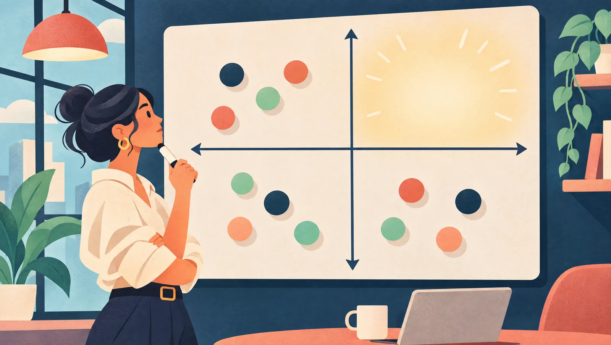
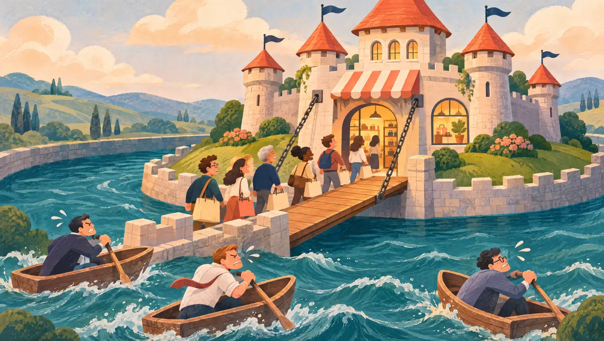

אספה נתוני מיקום וזמני נסיעה מהטלפונים של הנהגים, ודיווחים מהם. כל נהג שיפר את המידע לכל השאר: אפקט רשת. S26 גוגל קנתה אותה ב־2013 ב־966 מיליון דולר במזומן, לפי הדיווח של גוגל. S25
המקור על הרכישה
חלק א׳ · נושאים 1 עד 8
ניתוח שוק: כמה לקוחות יש, וכמה כסף
מגדירים את השוק, מחשבים אותו בדרך שמשקיעים מאמינים לה, ובודקים שהלקוחות באמת רוצים את המוצר.
סרטון: איך מחשבים גודל שוק
1:35 דקות · קריינות וכתוביות בעבריתתמליל הסרטון
גודל שוק מתחיל בארבעה מעגלים, אחד בתוך השני.
TAM הוא כל הכסף, אם כולם קונים. SAM הוא מה שאתם יכולים לשרת.
SOM הוא מה שתשיגו באמת בכמה שנים. ו־TM הוא הקבוצה שבה מתחילים.
הטעות הנפוצה: "השוק שווה 50 מיליארד דולר, ונשיג רק 1%".
משקיעים לא קונים את זה. אין שם מי הלקוח, באיזה מחיר, ואיך מגיעים אליו.
במקום זה בונים מלמטה: לקוחות, כפול מחיר, כפול תדירות.
PawWalk: 10,000 משקי בית, 144 הליכות בשנה, 50 שקל להליכה.
זה 72 מיליון שקל בשנה. בעמלה של 20%, נשארים 14.4 מיליון שקל הכנסה.
ועכשיו בדיקת רגישות: מה אם אנשים רוצים רק הליכה אחת בשבוע?
ההכנסה יורדת ל־4.8 מיליון שקל. הנחה אחת מוחקת שני שלישים מהשוק.
לכן בודקים קודם את ההנחה הכי חלשה.
ואיך בודקים? לא שואלים "הייתם קונים?". מבקשים התחייבות: כסף, פיילוט, או מכתב כוונות.
משקיעים לא בודקים כמה גדול המספר. הם בודקים איך הגעתם אליו.
נושא 1 · למה זה חשוב
למה בכלל לחשב גודל שוק?
האזנה לנושא (1:22)
מהירות:
תמליל
- ניתוח שוק הוא לא שקף שממלאים בשביל משקיעים.
- זו הדרך לא לבזבז שלוש שנים על משהו שאף אחד לא צריך.
- בקורס, חישוב גודל שוק עונה על שלוש שאלות.
- האם יש כאן עסק גדול מספיק? מאיפה נכון להתחיל? ומה באמת אפשר להשיג?
- ובמצגת הקורס יש משפט שכדאי לזכור: "מי שמכוון לכולם נשאר בלי אף אחד."
- גם במציאות, השוק חשוב יותר מכל דבר אחר.
- המשקיע מרק אנדריסן כתב שהשוק הוא הגורם הכי חשוב להצלחה או לכישלון של סטארט־אפ.
- בשוק טוב, הלקוחות "מושכים" את המוצר מהחברה.
- והוא מצטט משפט קצר: "כשצוות מצוין פוגש שוק גרוע, השוק מנצח."
- מחקר על סטארט־אפים שנכשלו מצא סיבה שחוזרת שוב ושוב: "לא היה צורך בשוק".
- אלה סיבות שהמייסדים עצמם דיווחו, והמספרים משתנים בין המהדורות של המחקר.
- לכן נגיד רק כך: חוסר ביקוש הוא אחד הרוצחים הגדולים של סטארט־אפים.
- בקיצור: לפני שבונים, בודקים שיש מספיק לקוחות שבאמת צריכים את המוצר.
במשפט אחדניתוח שוק הוא לא שקף שממלאים בשביל משקיעים. זו הדרך לא לבזבז שלוש שנים על משהו שאף אחד לא צריך.
מהקורסחישוב גודל שוק עונה על שלוש שאלות:
שאלה 1האם יש כאן עסק גדול מספיק?
שאלה 2מאיפה נכון להתחיל?
שאלה 3מה באמת אפשר להשיג?
"מי שמכוון לכולם, נשאר בלי אף אחד."
“Once you target everyone, you are left with no one.”
מתוך מצגת הקורס (בלי שם של אומר)
במציאות: השוק חשוב יותר מכל דבר אחר
↑ חזרה לתפריט
המשקיע מרק אנדריסן (Marc Andreessen) כתב שהשוק הוא הגורם הכי חשוב להצלחה או לכישלון של סטארט־אפ. בשוק טוב, הלקוחות "מושכים" את המוצר מהחברה. הוא מצטט את אנדי רקליף: "כשצוות מצוין פוגש שוק גרוע, השוק מנצח." S1
במחקר של CB Insights על סטארט־אפים שנכשלו, "לא היה צורך בשוק" היא אחת הסיבות שהמייסדים הזכירו הכי הרבה. שימו לב: אלה סיבות שהמייסדים עצמם דיווחו, ובמהדורות שונות של המחקר המספרים שונים. לכן נגיד רק: חוסר ביקוש הוא אחד הרוצחים הגדולים של סטארט־אפים. S11
נושא 2 · ההגדרות
ארבעה מעגלים: TAM, SAM, SOM ו־TM
האזנה לנושא (1:43)
מהירות:
תמליל
- את השוק מציירים כארבעה מעגלים, אחד בתוך השני.
- כל מעגל קטן מהקודם, כי מוסיפים לו עוד מגבלה.
- המעגל הגדול הוא TAM: השוק הכולל.
- זה כל הכסף שהיה נכנס בשנה, אם כל הלקוחות הרלוונטיים היו קונים מכם.
- בתוכו נמצא SAM: השוק שאפשר לשרת.
- זה החלק שהחברה יכולה לשרת בפועל, אחרי מגבלות של מוצר, טכנולוגיה, אזור וחוקים.
- בתוכו נמצא SOM: השוק שאפשר להשיג.
- זה החלק שתזכו בו באמת, בזמן מוגדר. בדוגמאות של הקורס, 3 עד 5 שנים.
- ובמרכז נמצא TM: שוק היעד.
- זו קבוצת הלקוחות המדויקת שבה בוחרים להתחיל, ולה מוכרים ראשונה.
- הדוגמה של הקורס היא סימפלי, חברה ישראלית של אפליקציות ללימוד נגינה.
- במעגל הגדול: כל מי שמוכן לשלם על אפליקציה ללימוד מוזיקה, בכל העולם.
- ובמרכז: מבוגרים בני 18 עד 40 בארה״ב, שרוצים ללמוד פסנתר כתחביב.
- שימו לב: TM הוא תוספת של הקורס, ובספרים יש בדרך כלל רק שלושה מעגלים.
- ולמבחן: TAM ו־SAM נמדדים בכסף, ו־TM מתואר כקבוצת אנשים.
- בקיצור: TAM הוא כל השוק, SAM מה שאפשר לשרת, SOM מה שתשיגו ו־TM הקבוצה שבה מתחילים.
מהקורסמציירים ארבעה מעגלים, אחד בתוך השני. כל מעגל קטן יותר מהקודם, כי מוסיפים לו עוד מגבלה. לחצו על כל מעגל כדי לראות את ההגדרה שלו ואת הדוגמה של הקורס: סימפלי (Simply), חברה ישראלית של אפליקציות ללימוד נגינה.

TAM · השוק הכולל. כל הכסף שהיה נכנס בשנה אם כל הלקוחות הרלוונטיים היו קונים מכם, כלומר 100% מהשוק.
סימפלי: כל הלקוחות בעולם שמוכנים לשלם על אפליקציות דיגיטליות ללימוד מוזיקה (בטלפון, בטאבלט או באינטרנט).
TAMהשוק הכולל
Total Addressable Market. כל ההכנסות האפשריות בשנה, מכל הלקוחות הרלוונטיים, אם הייתם מקבלים 100% מהשוק. נמדד בכסף.
SAMהשוק שאפשר לשרת
Serviceable Available Market. החלק מ־TAM שהחברה יכולה לשרת בפועל, אחרי מגבלות של מוצר, טכנולוגיה, אזור גאוגרפי וחוקים (רגולציה). נמדד בכסף.
SOMהשוק שאפשר להשיג
Serviceable Obtainable Market. החלק מ־SAM שהחברה יכולה לזכות בו באופן ריאלי, בזמן מוגדר (בדוגמאות של הקורס: 3 עד 5 שנים). תלוי בתחרות, במחיר, בתקציב, בדרך להגיע ללקוחות (Go-to-Market) וביכולת לבצע. נמדד בכסף או באחוז מהשוק.
TMשוק היעד
Target Market. קבוצת הלקוחות המדויקת שבה בוחרים להתחיל. בשבילה בונים את המוצר הראשון, אליה משווקים ולה מוכרים ראשונה.
ארבע הערות חשובות על ההגדרות
- TM הוא תוספת של הקורס. ברוב הספרים ואצל רוב המשקיעים יש רק שלושה מעגלים. ה־TM של הקורס הוא בעצם "ראש הגשר" (beachhead) שנלמד בנושא 7. שימו לב גם ש־TM מתואר כקבוצת אנשים, ולא כסכום כסף.
- מאנשים לכסף. ההגדרות אומרות "נמדד בכסף", אבל בדוגמאות של הקורס מתוארים אנשים. הצעד החסר הוא: אנשים × כמה כל אחד משלם בשנה = כסף. נעשה אותו בנושא 5.
- כתיב. בשקפים כתוב SERVICABLE. הכתיב הנכון הוא Serviceable. אצל משקיעים תפגשו לפעמים גם Serviceable Addressable Market בשביל SAM. זו אותה כוונה.
- סדר המעגלים במבחן. מהגדול לקטן: TAM, SAM, SOM, TM. בציור של הקורס, TM הוא המעגל הכי פנימי, בתוך ה־SOM. TAM ו־SAM נמדדים בכסף. SOM נמדד בכסף או באחוז מהשוק. TM מתואר כקבוצת אנשים.
| מעגל | מי בפנים | מה צמצם אותו |
|---|---|---|
| TAM | כל מי שמוכן לשלם על אפליקציה ללימוד מוזיקה, בכל העולם | כלום. זה הכול |
| SAM | לומדי פסנתר בעולם, באפליקציות לטלפון או לטאבלט, באנגלית, עם גישה לתשלום דיגיטלי | כלי נגינה, פלטפורמה, שפה ויכולת תשלום |
| SOM | לומדי פסנתר בארה״ב שאפשר להגיע אליהם: שיווק ישיר (B2C), בתי ספר למוזיקה (B2B2C) ומורים פרטיים | מדינה, ודרכים להגיע ללקוח |
| TM | מבוגרים בני 18 עד 40 בארה״ב, שרוצים ללמוד פסנתר כתחביב, משתמשים באפליקציות בטלפון ומוכנים לשלם מנוי חודשי | גיל, מטרה, הרגלים ונכונות לשלם |
מילים: B2C פירושו מוכרים ישירות לצרכן. B2B2C פירושו מגיעים לצרכן דרך עסק שותף, כמו בית ספר למוזיקה. Go-to-Market הוא התוכנית איך מגיעים ללקוחות ומוכרים להם.
מה חסר בדוגמה של סימפלי
↑ חזרה לתפריט
- אין מספרים בכלל. אי אפשר לדעת אם השוק גדול או קטן.
- ל־SOM אין זמן ואין אחוז, למרות שההגדרה של הקורס דורשת "בזמן מוגדר".
- התמונה בשקף מראה נגן גיטרה, אבל ה־SAM צומצם לפסנתר בלבד. סימפלי מלמדת גם כלים אחרים. הצמצום לפסנתר הוא בחירה של המרצה כדי לפשט.
נושא 3 · הדוגמאות מהשקפים
נטפליקס, אפליקציית כושר ו־וולט: מה נכון ומה לתקן
האזנה לנושא (1:54)
מהירות:
תמליל
- הקורס נותן עוד שלוש דוגמאות: נטפליקס, אפליקציית כושר וחברת המשלוחים וולט.
- בכולן חסר אותו דבר: החשבון עצמו.
- גם הכותרת בשקפים אומרת את זה: השערה של גודל שוק.
- גודל שוק הוא ניחוש מנומק שבודקים, לא עובדה.
- הדוגמה של נטפליקס בנויה מלמעלה למטה, מכל משקי הבית בעולם עם אינטרנט מהיר.
- אבל נטפליקס היא חברה גדולה וקיימת, ולא סטארט־אפ.
- ובשקף כתוב שהיא תשיג 10% עד 20% מהשוק, בלי הסבר מאיפה זה בא.
- באפליקציית הכושר יש מספרים, להמחשה בלבד.
- השוק שאפשר לשרת הוא בערך 8 עד 10 מיליארד דולר בשנה.
- והשקף לוקח ממנו 2% עד 4%.
- בדקנו את החשבון: הגבול התחתון של הטווח יוצא 160 מיליון דולר, ולא 200 מיליון.
- וחסר נתון חשוב: כמה משלם כל משתמש.
- בוולט הסדר הפוך: מתחילים מהקבוצה הקטנה, ועולים למעלה.
- הקבוצה היא צרכנים עירוניים בהלסינקי, שמזמינים אוכל באפליקציות באופן קבוע.
- אבל רק השוק שאפשר להשיג נבנה באמת מלמטה, ממספרים קטנים שאפשר לבדוק.
- ושימו לב: בשני המעגלים הגדולים (TAM ו־SAM) מודדים את כל ההוצאה של הלקוחות.
- ובשוק שאפשר להשיג (SOM), רק את העמלה של וולט.
- שתי הדרכים מקובלות, אבל צריך לכתוב במפורש באיזו מהן אתם משתמשים.
- בקיצור: הדוגמאות מלמדות את המושגים, אבל את החשבון עושים בעצמכם, צעד אחר צעד.
המסקנהבכל הדוגמאות חסר אותו דבר: החשבון עצמו. בנושא 5 נעשה אותו, צעד אחר צעד.
מהקורסהקורס נותן עוד שלוש דוגמאות. נעבור עליהן, ונסמן איפה צריך זהירות.
שימו לב לכותרת בשקפים: Market Size Hypothesis, כלומר השערה של גודל שוק. גודל שוק הוא ניחוש מנומק שבודקים, לא עובדה.
נטפליקס (מלמעלה למטה)
| מעגל | מה כתוב בשקף |
|---|---|
| TAM | כל משקי הבית בעולם עם אינטרנט מהיר ומסך לצפייה, שיכולים לשלם על בידור דיגיטלי |
| SAM | משקי בית בצפון אמריקה ובאירופה, עם אינטרנט מהיר, שפה שנטפליקס תומכת בה ואמצעי תשלום דיגיטלי |
| SOM | מה שאפשר להשיג בפועל בתוך 3 עד 5 שנים, למשל 10% עד 20% מהשוק הרלוונטי, במדינות שבהן נטפליקס משקיעה בשיווק, בתוכן מקורי ובשיתופי פעולה |
| TM | בני 25 עד 40 בצפון אמריקה, שצופים בסטרימינג לפחות 10 שעות בשבוע, כבר משלמים על מנוי וידאו ופתוחים לנסות מותגים חדשים |
הערות
- נטפליקס היא חברה גדולה וקיימת, ולא סטארט־אפ. לכן זו דוגמה טובה למושגים, אבל פחות למה שמייסד חדש עושה.
- ה־SAM מוגבל לצפון אמריקה ולאירופה, למרות שנטפליקס פועלת כמעט בכל העולם.
- "10% עד 20%" כתוב בלי הסבר מאיפה הוא בא. בנושא 4 נראה למה משקיעים לא אוהבים אחוז שנבחר "מהאוויר".
אפליקציית כושר (מלמעלה למטה, "המספרים להמחשה בלבד")
| מעגל | מי | המספר בשקף |
|---|---|---|
| TAM | כל האנשים בעולם שמוכנים לשלם על אפליקציית כושר | ~$15–20B בשנה |
| SAM | מי שיכול להשתמש בפועל (שפה נתמכת, תשלום דיגיטלי) | ~$8–10B בשנה |
| SOM | ארה״ב וקנדה, בעוד 3 עד 5 שנים, מול Peloton, Apple Fitness+ ו־Fitbit | 2% עד 4% מה־SAM, כלומר ~$200–400M בשנה, ובערך 2 עד 3 מיליון משתמשים פעילים |
| TM | בני 25 עד 40 בארה״ב שמתאמנים בבית ומשתמשים באפליקציות כושר | שנה 1: 50 עד 100 אלף משתמשים חדשים. שנים 3 עד 5: כ־800 אלף פעילים |
בדקנו את החשבון
- 2% מ־8 מיליארד הם $160M, ו־4% מ־10 מיליארד הם $400M. לכן הטווח הנכון הוא 160 עד 400 מיליון דולר, ולא 200 עד 400. זו טעות קטנה.
- ה־SOM מוגבל לארה״ב ולקנדה, אבל האחוז נלקח מה־SAM שלא הוגבל לאזור. לא ברור אם 2% עד 4% הם מכל העולם או רק מצפון אמריקה.
- מה שלא כתוב: כמה משלם כל משתמש. אם מחלקים את ההכנסות במספר המשתמשים, יוצא בערך $53–200 למשתמש בשנה (לפי הטווח המתוקן, 160 עד 400 מיליון דולר). כדאי לכתוב את זה במפורש. זה בדיוק "המחיר" במשוואה של נושא 5.
וולט (Wolt, מלמטה למעלה)
בשקף הסדר הפוך: מתחילים מ־TM ועולים ל־TAM.
- TM: צרכנים עירוניים בני 20 עד 45 בהלסינקי, שמזמינים אוכל ומצרכים באפליקציות באופן קבוע.
- SOM: ההכנסות שוולט יכולה לייצר מהזמנות בהלסינקי. מחשבים מ: אחוז העסקים שמצטרפים × מספר הזמנות ממוצע × עמלה ממוצעת להזמנה.
- SAM: כל ההוצאה על הזמנות אונליין ממסעדות וחנויות, במדינות שבהן וולט פועלת או תפעל בקרוב.
- TAM: כל ההוצאה של צרכנים על הזמנות אונליין (משלוח ואיסוף) ממסעדות, סופרמרקטים וחנויות, בערים גדולות בעולם עם תשתית משלוחים.
הערה
רק ה־SOM כאן באמת נבנה "מלמטה": הוא מכפלה של מספרים קטנים שאפשר לבדוק. ה־SAM וה־TAM מוגדרים כ"כל ההוצאה", וזה סגנון של מלמעלה למטה. ואין מספרים בכלל.
שימו לב לשני דברים. (1) בנוסחה שבשקף חסר מספר: אחוז העסקים שמצטרפים הוא לא מספר עסקים. החשבון המלא: מספר העסקים בהלסינקי × אחוז שמצטרפים × הזמנות לעסק בשנה × עמלה להזמנה. (2) ב־SAM וב־TAM של וולט מודדים את כל ההוצאה של הלקוחות (כמו GMV), וב־SOM רק את העמלות של וולט. ב־PawWalk (נושא 5) מדדנו גם את ה־SAM בהכנסות שלנו. שתי הדרכים מקובלות. העיקר לכתוב במפורש באיזו מהן אתם משתמשים.
נושא 4 · איך מחשבים
שתי שיטות: מלמעלה למטה, ומלמטה למעלה
האזנה לנושא (2:09)
מהירות:
תמליל
- יש שתי דרכים לחשב גודל שוק: מלמעלה למטה, ומלמטה למעלה.
- מלמעלה למטה מתחילים מדוחות שוק וממחקרי תעשייה.
- לוקחים את השוק הכולל, ומצמצמים אותו בהדרגה לפי מגבלות אמיתיות.
- מלמטה למעלה מתחילים בקטן, ממכירות ראשונות ומלקוחות אמיתיים.
- הנוסחה: שוק בשנה = לקוחות × מחיר × תדירות.
- לקוחות הם מי שמתאים לפרופיל שלכם, ומחיר הוא כמה משלמים בכל קנייה.
- ותדירות היא כמה פעמים בשנה קונים.
- ובזירת מסחר שלוקחת עמלה, ההכנסה שלכם היא סך הקניות × העמלה.
- משקיעים קוראים את השיטה, ולא את המספר.
- חישוב מלמטה מראה שאתם יודעים מי הלקוח, כמה הוא משלם ואיך תגיעו אליו.
- המשקיעים גם בודקים שהשוק גדול מספיק, כי קרן הון סיכון צריכה שהצלחה אחת תחזיר את כל הקרן.
- ועכשיו, הדגל האדום הקלאסי.
- השקף אומר: "השוק העולמי שווה 50 מיליארד דולר."
- "ואם נשיג רק 1%, נכניס 500 מיליון דולר בשנה."
- השקף הזה מסתיר את החלק הקשה: מי קונה ראשון, למה ובאיזה מחיר.
- ו־1% זה לא "קצת": כדי להשיג אותו, צריך בדרך כלל לנצח את רוב המתחרים.
- יש גם טעות הפוכה.
- פרופסור אחד חישב את השוק של Uber לפי שוק המוניות הקיים, בערך 100 מיליארד דולר.
- משקיע של Uber ענה שהעתיד לא חייב להיראות כמו העבר.
- כי מוצר זול ונוח בהרבה יכול ליצור ביקוש חדש, שאף דוח עוד לא מודד.
- בקיצור: בונים את השוק מלמטה, מלקוחות, מחיר ותדירות, ולא מאחוז קטן של מספר ענק.
שיטה 1 · Top-downמלמעלה למטה
מהקורסמתחילים ממחקרי תעשייה ודוחות שוק. לוקחים את השוק הכולל, ומצמצמים אותו בהדרגה לפי מגבלות אמיתיות, עד לשוק שאפשר להשיג ולשוק היעד.
שיטה 2 · Bottom-upמלמטה למעלה
מהקורסמתחילים בקטן, מנתונים של מכירות ראשונות. מזהים את קבוצות הלקוחות, מעריכים בעזרת הנחות ומחקר שוק, ובונים את השוק כלפי מעלה. בודקים איפה אפשר למכור, כמה מוכרים היום מוצרים דומים, ואיזה חלק מהמכירות האלה אפשר לקחת.
שוק בשנה = לקוחות × מחיר × תדירות
זו הנוסחה של מלמטה למעלה. לקוחות = כמה לקוחות מתאימים לפרופיל שלכם. מחיר = כמה משלמים בכל קנייה. תדירות = כמה פעמים בשנה קונים. בזירת מסחר (marketplace) שלוקחת עמלה, מוסיפים צעד: ההכנסה שלכם = סך הקניות דרך הפלטפורמה × העמלה. סך הקניות נקרא GMV, והעמלה נקראת take rate.
מהקורסאיזו שיטה עדיפה? תלוי: באילו נתונים אפשר להשיג, באילו הנחות אפשר לבדוק, בכמה אתם מכירים את התחום, ובנתוני השוואה מחברות דומות (benchmarks). ובעיקר: החישוב עוזר למשקיעים ולשותפים להבין איך אתם חושבים.
במציאות: משקיעים קוראים את השיטה, לא את המספר
- הם בודקים שה־TAM גדול מספיק. קרן הון סיכון משקיעה בהרבה סטארט־אפים, ויודעת שרובם ייכשלו. לכן היא צריכה שהצלחה אחת תחזיר את כל הקרן. אם השוק קטן, גם הצלחה מלאה לא תספיק לה. זה מסנן, לא ציון: שוק קטן יכול להיות עסק טוב, רק לא עסק להון סיכון.
- הם כמעט לא מאמינים למספר הגדול. הם קוראים איך הגעתם אליו. חישוב מלמטה למעלה מראה שאתם יודעים מי הלקוח, כמה הוא משלם ואיך תגיעו אליו.
- הם מחפשים את קבוצת הלקוחות הראשונה. TAM ענק בלי לקוח ראשון ברור הוא שקף חלש יותר מ־SAM צנוע עם לקוח ראשון חד.
- הם בודקים אם השוק גדל. שוק קטן שגדל מהר הוא בדרך כלל מושך יותר משוק גדול שעומד במקום (נושא 6).
מייקל סייבל מ־Y Combinator מעדיף מלמטה למעלה, כי היא עוזרת להימנע מהטעות הנפוצה של מלמעלה למטה: לא לצמצם מספיק את הלקוח. S3
למה "צריך רק 1% משוק ענק" הוא דגל אדום
השקף החלש הקלאסי: "השוק העולמי שווה 50 מיליארד דולר. אם נשיג רק 1%, נכניס 500 מיליון דולר בשנה." (1% × $50B = $500M)
- הוא מסתיר את החלק הקשה. אין בו מי קונה ראשון, למה, באיזה מחיר ודרך איזה ערוץ. לאק אננת׳, משקיע בקרן N47, כתב שהשורה הזאת "גורמת למשקיעים להישען אחורה", ושהבעיה היא לא החשבון אלא צורת החשיבה. העצה שלו: להיות הבחירה הברורה של קבוצה מאוד מסוימת של משתמשים. S4
- בהרבה שווקי טכנולוגיה המובילים לוקחים כמעט הכול. למה? בגלל אפקט רשת (כולם הולכים לאן שכולם נמצאים), ובגלל עלויות קבועות גבוהות: לבנות את המוצר עולה הרבה, אבל משתמש נוסף כמעט לא עולה כלום. לכן הגדול מרוויח הרבה יותר מהקטן. להיות שחקן של 1% זו לא תוצאה מושכת. S4 S36
- 1% זה לא "קצת". כדי להשיג 1% משוק גדול צריך בדרך כלל לנצח את רוב המתחרים. זו מטרה קשה, לא צנועה.
- המספר בדרך כלל מועתק מדוח שמגדיר את השוק אחרת ממה שהסטארט־אפ באמת מוכר.
במציאות: גם הטעות ההפוכה קיימת
↑ חזרה לתפריט
ב־2014 פרופסור אסוואת׳ דמודרן חישב את השוק של Uber לפי שוק המוניות הקיים בעולם, בערך 100 מיליארד דולר. ביל גרלי, משקיע ב־Uber, ענה שהחישוב מניח ש"העתיד ייראה כמו העבר". הוא הראה תרחישים שבהם השוק של Uber גדול עד פי 25. S5
הלקח: כשמוצר זול או נוח בהרבה, הוא יכול ליצור ביקוש חדש שאף דוח עוד לא מודד. את זה מוכיחים עם ראיות מלמטה (שימוש חדש אמיתי), לא עם מספר גדול יותר מלמעלה.
נושא 5 · דוגמה פתורה ומחשבון
בונים שוק מלמטה: PawWalk, צעד אחר צעד
האזנה לנושא (2:08)
מהירות:
תמליל
- עכשיו נבנה שוק מלמטה, צעד אחר צעד, עם רעיון בדוי: PawWalk.
- זו אפליקציה בתל אביב, שמחברת בעלי כלבים עם מוליכי כלבים שנבדקו.
- כל המספרים כאן הם הנחות ללימוד, לא עובדות.
- מתחילים מהלקוחות: בעיר יש 40,000 משקי בית עם כלב.
- נניח שרבע מהם עובדים שעות ארוכות, וישלמו על הליכות.
- זה 10,000 משקי בית מתאימים.
- עכשיו התדירות: 3 הליכות בשבוע, 48 שבועות בשנה.
- יחד, זה 144 הליכות בשנה, לכל משק בית.
- המחיר הוא 50 ₪ להליכה.
- אז כל הכסף שמשלמים על הליכות בעיר הוא 72 מיליון ₪ בשנה.
- PawWalk שומרת לעצמה 20% מהמחיר של כל הליכה.
- לכן ההכנסה האפשרית שלה היא 14.4 מיליון ₪ בשנה.
- זה השוק שאפשר לשרת, SAM, מדוד בהכנסות.
- ומה אפשר באמת להשיג בעוד 3 שנים?
- נניח שנחתים 5% מהמשקים המתאימים, כלומר 500 משקי בית.
- ההכנסה של PawWalk מהם היא 720,000 ₪ בשנה.
- וזה SOM, השוק שאפשר להשיג.
- ועכשיו החלק הכי חשוב: בדיקת רגישות.
- מה אם בראיונות מתברר שאנשים רוצים הליכה אחת בשבוע, ולא שלוש?
- ההכנסה האפשרית יורדת ל־4.8 מיליון ₪ בשנה.
- הנחה אחת הורידה את השוק בשני שלישים.
- לכן מוצאים את ההנחה הכי חלשה, ובודקים אותה ראשונה, עוד לפני שבונים.
- בקיצור: לקוחות × תדירות × מחיר × עמלה, ואז בודקים איזו הנחה הכי רגישה.
דוגמה בדויההרעיון: PawWalk, אפליקציה בתל אביב־יפו שמחברת בעלי כלבים עם מוליכי כלבים שנבדקו. PawWalk שומרת לעצמה 20% מהמחיר של כל הליכה. כל המספרים הם הנחות ללימוד, לא עובדות.
| צעד | הנחה | מאיפה מביאים |
|---|---|---|
| A. משקי בית עם כלב בעיר | 40,000 | נתוני רישוי כלבים של העירייה, שיחות עם וטרינרים וחנויות |
| B. מי מהם עובד שעות ארוכות וישלם על הליכות | 25% | ראיונות עם לקוחות, דף נחיתה לבדיקה |
| C. הליכות בשבוע לכל משק בית שמשלם | 3 | ראיונות על מה שאנשים עושים היום |
| D. שבועות בשנה | 48 | משאירים מקום לחופשות |
| E. מחיר להליכה | ₪50 | כמה גובים מוליכי כלבים בעיר היום |
| F. העמלה של PawWalk | 20% | זירות מסחר דומות |
- לקוחות מתאימים: A × B = 40,000 × 25% = 10,000 משקי בית.
- הליכות בשנה לכל משק בית: C × D = 3 × 48 = 144.
- כל ההליכות בשנה: 10,000 × 144 = 1,440,000.
- כל הכסף שמשלמים על הליכות (GMV): 1,440,000 × ₪50 = ₪72,000,000 בשנה.
- ההכנסה האפשרית של PawWalk (SAM, בהכנסות): ₪72,000,000 × 20% = ₪14,400,000 בשנה.
SOM: מה אפשר באמת להשיג בעוד כ־3 שנים?
נניח שנצליח להחתים 5% מהמשקים המתאימים. זו הנחה, והיא תלויה בכמה מוליכים טובים נצליח לגייס.
10,000 × 5% = 500 משקי בית
500 × 144 × ₪50 = ₪3,600,000 (GMV)
₪3,600,000 × 20% = ₪720,000 הכנסה בשנה
בדיקת רגישות, החלק הכי חשוב: מה אם בראיונות מתברר שאנשים רוצים הליכה אחת בשבוע, ולא שלוש? 10,000 × (1 × 48) × ₪50 = ₪24,000,000, ואחרי עמלה ₪4,800,000. הנחה אחת הורידה את השוק בשני שלישים. הלקח: מוצאים את ההנחה הכי חלשה, ובודקים אותה ראשונה, עוד לפני שבונים.
מה משקיע היה אומר על PawWalk
"זה שוק מקומי אמיתי ומובן. אבל 14.4 מיליון שקל הכנסה בעיר אחת זה לא שוק בגודל של הון סיכון. מה הדרך לעסק גדול בהרבה: עוד ערים, עוד מדינות, עוד שירותים (שמירה על כלבים, ביקורי וטרינר)? ולמה PawWalk תנצח מוליכים שכבר מוצאים לקוחות בקבוצות וואטסאפ ובפייסבוק?" השאלה האחרונה היא כבר שאלה של תחרות (חלק ב׳).
ועוד שאלה שכל משקיע בזירות שירותים שואל: "אחרי שבעל הכלב מצא מוליך טוב, למה שלא ישלם לו ישירות בביט ויחסוך את העמלה?" לזה קוראים דליפה מהפלטפורמה (disintermediation). נחזור לזה בתרגיל 3 (נושא 24).
ומה ה־TAM כאן? אותו חישוב, לכל עיר ומדינה שבהן אותו מוצר ואותה דרך מכירה יעבדו. TAM הוגן רק אם הייתם יכולים לשרת אותו עם בערך אותו מוצר ואותה דרך מכירה.
נסו בעצמכם · מחשבון
לקוחות × מחיר × תדירות
הזיזו את המחוונים, או בחרו דוגמה מוכנה. התוצאה מתעדכנת מיד, ותמיד מושווית לנקודת הפתיחה של הדוגמה. כך רואים כמה כל הנחה "שווה".
10,000 × ₪50 × 144 = ₪72,000,000
כל הכסף בשוק בשנה (GMV)₪72,000,000
ההכנסה האפשרית שלכם (SAM)₪14,400,000כמו נקודת הפתיחה
SOM: הכנסה בעוד 3 שנים₪720,0005% מה־SAM
זו נקודת הפתיחה של PawWalk. נסו להוריד את התדירות מ־144 ל־48 (הליכה אחת בשבוע) ותראו מה קורה.
שימו לב: בכפל, כל הנחה משפיעה באותו יחס. אם מחצית מהלקוחות נעלמת, או שהמחיר יורד בחצי, התוצאה יורדת בחצי. לכן השאלה היא לא איזה מספר "חשוב", אלא באיזה מספר אתם הכי פחות בטוחים. אותו בודקים ראשון.
נושא 6 · תזמון
למה עכשיו? (Why now) ושוק שגדל
האזנה לנושא (2:05)
מהירות:
תמליל
- הקורס לא מדבר על תזמון, אבל כל משקיע ישאל: למה עכשיו?
- קרן Sequoia כותבת שלחברות הטובות ביותר כמעט תמיד יש תשובה ברורה לשאלה הזאת.
- והיא שואלת: "הטבע שונא ואקום, אז למה אף אחד לא בנה את הפתרון שלכם עד היום?"
- המשקיע ביל גרוס ניתח כמה מאות חברות.
- לפי הניתוח שלו, התזמון הסביר את ההבדל בין הצלחה לכישלון יותר מהצוות, מהרעיון, מהמודל העסקי ומהכסף.
- אבל זהירות: זה ניתוח של משקיע אחד על החברות שלו, ולא מחקר שעבר ביקורת.
- יש חמישה טריגרים נפוצים ל"למה עכשיו".
- טכנולוגיה חדשה נהייתה טובה או זולה מספיק, כמו הטלפון החכם, שאפשר את וייז.
- שינוי בהתנהגות, כמו המעבר לעבודה מהבית.
- שינוי בחוק, שינוי בעלויות, או חברה מובילה שהלקוחות כבר לא מרוצים ממנה.
- ותזמון במספרים: זום.
- בדצמבר 2019 היו לזום בערך 10 מיליון משתתפים יומיים בפגישות.
- באפריל 2020 הם היו יותר מ־300 מיליון.
- זה גידול של פי 30, בארבעה חודשים.
- אבל אדם שנכנס לכמה פגישות נספר כמה פעמים.
- לכן תמיד שואלים מה המדד באמת סופר.
- ועוד דבר: שוק שגדל עדיף על שוק שעומד במקום.
- בשוק שגדל יש לקוחות שקונים בפעם הראשונה, ולא צריך לשכנע אותם לעבור מספק אחר.
- בשוק שעומד, כל לקוח צריך להילקח ממישהו אחר, והחברות הקיימות יילחמו במחיר.
- בקיצור: משקיעים רוצים לראות שהשוק גדל, וגם מה השתנה שמאפשר את הרעיון דווקא עכשיו.
במציאותהקורס לא מדבר על תזמון, אבל כל משקיע ישאל עליו. קרן Sequoia כותבת למייסדים שלחברות הטובות ביותר כמעט תמיד יש תשובה ברורה ל"למה עכשיו?". והיא שואלת: "הטבע שונא ואקום. אז למה אף אחד לא בנה את הפתרון שלכם עד היום?" S2
כמה תזמון חשוב?
ביל גרוס מ־Idealab ניתח כמה מאות חברות בהרצאת TED ב־2015. לפי הניתוח שלו, התזמון הסביר את החלק הגדול ביותר של ההבדל בין הצלחה לכישלון (42%), יותר מהצוות, הרעיון, המודל העסקי והכסף. הדוגמה שלו: Airbnb נעזרה במשבר הכלכלי, כשאנשים חיפשו הכנסה נוספת. זהירות: זה ניתוח של משקיע אחד על החברות שלו, לא מחקר שעבר ביקורת. S6 גם אנדריסן אמר שלהקדים מדי זה כמעט כמו לטעות. S36
חמישה טריגרים נפוצים ל"למה עכשיו"
1טכנולוגיה חדשה נהייתה טובה או זולה מספיק
סמארטפונים עם GPS אפשרו ניווט שמבוסס על הנהגים עצמם, כמו וייז: וייז אספה נתוני מיקום וזמני נסיעה מהטלפונים של המשתמשים. S26
2שינוי בהתנהגות
הלם שמשנה הרגלים. למשל, המעבר לעבודה מהבית ב־2020.
3שינוי בחוק (רגולציה)
חוק חדש שמחייב חברות לקנות משהו.
4שינוי בעלויות
מחשוב ענן הפך את הקמת חברת תוכנה לזולה.
5החברה המובילה נתקעה
הלקוחות לא מרוצים מהמוביל הקיים. ראו את זום בנושא 14.
תזמון במספרים: זום
זום דיווחה על כ־10 מיליון משתתפים יומיים בפגישות בדצמבר 2019, ועל יותר מ־300 מיליון באפריל 2020. גידול של פי 30 (300M : 10M = 30) בארבעה חודשים. S23
בונוס חשוב: בהתחלה זום קראה לזה "משתמשים יומיים", ואחר כך תיקנה ל"משתתפים יומיים בפגישות". אדם אחד שנכנס לכמה פגישות נספר כמה פעמים. תמיד תשאלו מה המדד באמת סופר.
שוק שגדל מול שוק שמתכווץ
- בשוק שגדל יש לקוחות שקונים בפעם הראשונה. עוד אין להם ספק, ולכן לא צריך לשכנע אותם לעבור. זה הרבה יותר קל.
- בשוק שעומד או מתכווץ כל לקוח שתשיגו צריך להילקח ממישהו אחר, והחברות הקיימות יילחמו במחיר.
- מה משקיעים רוצים לראות: את קצב הגידול של השוק, וגם את הסיבה שהוא גדל (ה"למה עכשיו").
- גם בשוק מתכווץ יכולה להסתתר הזדמנות, למשל מודל זול שהחברות הקיימות לא יכולות להרשות לעצמן להעתיק (מיצוב־נגדי, נושא 13). אבל צריך להוכיח יותר.
נושא 7 · איפה מתחילים
ראש גשר (beachhead): מתחילים בקטן, ומנצחים
האזנה לנושא (1:50)
מהירות:
תמליל
- לא תוקפים את כל השוק בבת אחת.
- בוחרים קבוצה אחת קטנה ומדויקת, שבה אפשר להפוך לבחירה הראשונה והברורה.
- מנצחים בה, ורק אז מתרחבים.
- זה שוק היעד של הקורס, TM.
- ג׳פרי מור, בספר מפורסם, קורא לזה "ראש גשר", כמו בנחיתה בנורמנדי.
- כובשים חוף אחד קטן, ורק אחר כך מתקדמים פנימה.
- פיטר תיל אומר שכל סטארט־אפ צריך להתחיל בשוק קטן מאוד, ולשלוט בו.
- פייסבוק התחילה בהרווארד, ואמזון התחילה בספרים.
- ופול גרהם אומר: עדיף משהו שמעט אנשים רוצים מאוד, על משהו שהרבה אנשים רוצים קצת.
- דוגמה ישראלית: monday.com התחילה ככלי פנימי בחברת Wix.
- כשהיא הפכה לחברה נפרדת, Wix הייתה הלקוחה הראשונה שלה.
- איך בוחרים ראש גשר? יש חמישה סימנים.
- הכאב חד: הם כבר מוציאים כסף או זמן על הבעיה.
- הם יכולים לקנות, ואתם יודעים איפה למצוא אותם.
- הם מדברים זה עם זה, ולכן לקוח מרוצה אחד מביא את הבא.
- והניצחון בהם עוזר לנצח בקבוצה הבאה.
- ומפלחים לפי מצב, ולא לפי גיל.
- לא "מרפאות שיניים", אלא "מרפאות עם יותר מ־3 רופאים, שעדיין קובעות תורים בטלפון".
- והמבחן: האם תוכלו לכתוב השבוע רשימה של 50 לקוחות, עם שם?
- בקיצור: מתחילים בקבוצה קטנה שרוצה אתכם מאוד, מנצחים בה, ורק אז מתרחבים.
במציאותלא תוקפים את כל השוק בבת אחת. בוחרים קבוצה אחת קטנה ומדויקת, שבה אפשר להפוך לבחירה הראשונה והברורה. מנצחים בה, ורק אז מתרחבים. זה ה־TM של הקורס.
- ג׳פרי מור, בספר Crossing the Chasm, קורא לזה "ראש גשר": כמו בנחיתה בנורמנדי, כובשים חוף אחד ואז מתקדמים פנימה. S34
- פיטר תיל, בספר Zero to One, טוען שכל סטארט־אפ צריך להתחיל בשוק קטן מאוד ולשלוט בו. הדוגמאות שלו: פייסבוק התחילה בהרווארד, ואמזון התחילה בספרים. S35
- פול גרהם מ־Y Combinator: אפשר לבנות משהו שהרבה אנשים רוצים קצת, או משהו שמעט אנשים רוצים מאוד. "בחרו בשני." לדבריו, כמעט כל רעיון טוב לסטארט־אפ הוא מהסוג השני. S7
דוגמה ישראלית: monday.com התחילה בלקוח אחד
monday.com התחילה ככלי פנימי ב־Wix, שנבנה בסביבות 2010 כדי לפתור בעיית תקשורת בין צוותים כש־Wix גדלה. ב־2012 היא הפכה לחברה נפרדת (בשם daPulse), ו־Wix הייתה הלקוחה הראשונה שלה. S29 ראש הגשר הראשון: חברת טכנולוגיה שגדלה מהר, עם בעיית תיאום כואבת שחוזרת כל יום. לקוח שרצה את הפתרון מאוד.
איך בוחרים ראש גשר: חמישה סימנים
- הכאב חד. הם כבר מוציאים כסף, זמן או "פתרונות עוקפים" על הבעיה.
- הם יכולים לקנות. יש להם תקציב, וקל לזהות מי מחליט.
- אתם יכולים להגיע אליהם. אתם יודעים איפה הם מתאספים: קבוצת וואטסאפ, איגוד מקצועי, כנס.
- הם מדברים זה עם זה. כך לקוח מרוצה אחד מביא את הבא.
- הניצחון בהם עוזר לנצח בקבוצה הבאה. לקוח שממליץ עליכם, נתונים, או יכולות במוצר שעוברות הלאה.
פילוח לפי מצב, לא לפי גיל
↑ חזרה לתפריט
בספרים מפלחים לפי גיל והכנסה. בסטארט־אפ אמיתי מפלחים לפי מצב והתנהגות. לא "מרפאות שיניים", אלא "מרפאות עם יותר מ־3 רופאי שיניים שעדיין קובעות תורים בטלפון". המבחן: האם תוכלו לכתוב השבוע רשימה של 50 אנשים או חברות עם שם, שנמצאים בקבוצה הזאת?
נושא 8 · האם באמת רוצים את זה?
הוכחת ביקוש: סולם הראיות ו"מבחן אמא"
האזנה לנושא (1:43)
מהירות:
תמליל
- גודל שוק הוא השערה.
- משקיעים רוצים לראות ראיות שהלקוחות באמת רוצים את המוצר.
- ולא כל ראיה שווה אותו דבר.
- הראיה הכי חזקה: לקוחות משלמים, וקונים שוב.
- אחריה: מכירה מראש, פיילוט בתשלום או מקדמה.
- אחר כך: מכתב כוונות חתום, ממי שמחליט.
- באמצע: שימוש פעיל באב־טיפוס, ואחריו הרשמה לרשימת המתנה.
- והחלשות ביותר: דעות בראיון, כמו "בטוח הייתי משתמש", ולייקים ומחמאות מחברים.
- דוגמה לרשימת המתנה: Dropbox.
- המייסד הכין סרטון קצר, שמראה את המוצר עובד.
- לדבריו, רשימת ההמתנה קפצה מ־5,000 ל־75,000 איש, כמעט בן לילה.
- זה עבד, כי אנשים ראו מוצר מסוים עובד.
- ואיך מראיינים לקוחות? בעזרת "מבחן אמא".
- השם בא מהרעיון שגם אמא שלכם תשקר לכם, כדי להיות נחמדה.
- לכן מדברים על החיים שלהם, ולא על הרעיון שלכם.
- שואלים על דברים שקרו בעבר, ולא על דעות לגבי העתיד.
- ומדברים פחות, ומקשיבים יותר.
- לא שואלים: "כמה הייתם משלמים על זה?"
- שואלים: "כמה אתם משלמים על זה היום? אפשר לראות?"
- בקיצור: דעות לא מוכיחות ביקוש. כסף, התחייבות ושימוש אמיתי, כן.
במציאותגודל שוק הוא השערה. משקיעים רוצים לראות ראיות שהלקוחות באמת רוצים את המוצר. לא כל ראיה שווה אותו דבר. מייסדים ומשקיעים מדרגים ראיות בערך כך, מהחזקה לחלשה:
- הכי חזקהלקוחות משלמים, וקונים שובכסף ושימוש חוזר הם האות הכי ברור.
- חזקה מאודמכירה מראש, פיילוט בתשלום, מקדמהמישהו נתן כסף עוד לפני שהמוצר גמור.
- חזקהמכתב כוונות חתום (LOI) ממי שמחליטלא מחייב, אבל עולה ללקוח במוניטין. חזק יותר אם כתוב בו מחיר.
- בינוניתשימוש פעיל באב־טיפוס, או שירות שאתם עושים בידמראה התנהגות, לא דעה.
- בינונית־חלשההרשמה לרשימת המתנהזול לתת. בדקו כמה פותחים את המייל הבא או מגיעים.
- חלשה"בטוח הייתי משתמש" בראיוןדעות על העתיד לא אמינות.
- הכי חלשהסקר בין חברים, לייקים, מחמאותכמעט בלי מידע.
דוגמה · רשימת המתנהDropbox
המייסד דרו יוסטון הכין סרטון קצר שמראה את המוצר עובד, במקום מוצר ציבורי. לדבריו רשימת ההמתנה קפצה מכ־5,000 ל־75,000 איש "ממש בן לילה". S9 זה עבד כי אנשים השאירו מייל למוצר מסוים שראו עובד. דף "הצטרפו לרשימה" כללי, בלי מוצר, חלש בהרבה.
דוגמה · אחרי ההשקהSuperhuman ומבחן 40%
שואלים משתמשים: "איך תרגישו אם לא תוכלו להשתמש יותר במוצר?". שון אליס מצא שבחברות שבהן לפחות 40% עונים "מאוד מאוכזב", בדרך כלל יש התאמת מוצר־שוק (product-market fit): מצב שבו המוצר עונה על צורך חזק, והלקוחות כמעט "מושכים" אותו מכם. Superhuman התחילה ב־22%, ולמדה מהתשובות איך להשתפר. S10
"מבחן אמא" (The Mom Test): איך לראיין לקוחות
השם בא מהרעיון שגם אמא שלכם תשקר לכם כדי להיות נחמדה, אם תשאלו "את אוהבת את הרעיון שלי?". לכן יש שלושה כללים: S8
- דברו על החיים שלהם, לא על הרעיון שלכם.
- שאלו על דברים ספציפיים שקרו בעבר, לא על דעות לגבי העתיד. "מתי זה קרה בפעם האחרונה? מה עשיתם? כמה זה עלה?"
- דברו פחות, הקשיבו יותר.
מחמאות, משפטים כלליים ("בדרך כלל אני...") ורעיונות לפיצ׳רים הם "מידע גרוע". חפרו כדי למצוא את העובדות שמאחוריהם.
| גרוע (מזמין שקר מנומס) | טוב (חושף עובדות) |
|---|---|
| "הייתם משתמשים באפליקציה להולכת כלבים?" | "מי הוציא את הכלב שלכם בשבוע שעבר, כשעבדתם עד מאוחר?" |
| "כמה הייתם משלמים על זה?" | "כמה אתם משלמים על זה היום? אפשר לראות?" |
| "זה רעיון טוב?" | "מה כבר ניסיתם כדי לפתור את זה? למה הפסקתם?" |
| "הייתם קונים אם זה היה קיים?" | "אפשר לרשום אתכם לפיילוט בתשלום שמתחיל בחודש הבא?" (מבחן התחייבות) |
10 טעויות נפוצות בניתוח שוק, ואיך מתקנים (טבלה)
| הטעות | התיקון |
|---|---|
| מצטטים שוק עולמי ענק מדוח ולוקחים "1%" | בונים מלמטה: סוג לקוח עם שם, מחיר ותדירות |
| "כולם הלקוחות שלנו" | כתבו את 50 הלקוחות הראשונים שתוכלו למנות השבוע |
| שוכחים תדירות (פעם אחת או כל חודש?) | כותבים במפורש לקוחות × מחיר × תדירות |
| מערבבים GMV (כל הכסף) והכנסה (החלק שלכם) | בזירת מסחר, מכפילים בעמלה |
| מחיר שאף אחד לא בדק | לוקחים מחיר ממה שמשלמים היום, או מדפי המחירים של מתחרים |
| מתייחסים להתלהבות בראיון כאל ביקוש | מבקשים התחייבות: כסף, זמן, מכתב כוונות, היכרות |
| אין "למה עכשיו" | מציינים את השינוי המסוים שמאפשר את זה היום |
| מבלבלים שוק גדול עם שוק טוב | שוק קטן יותר, שגדל ושאפשר להגיע אליו, יכול לנצח שוק ענק, עומד ונעול |
| "דיוק מזויף" (₪72,413,902) | מספרים עגולים, הנחות ברורות וטווח רגישות |
| רק השוק הישראלי, עם סיפור של הון סיכון | בישראל יש קצת יותר מ־10 מיליון איש S33. אמרו מוקדם איך העסק יגדל מעבר לישראל |
חלק ב׳ · נושאים 9 עד 16
תחרות: מי באמת מתחרה בכם, ואיך מנצחים
מגלים את כל המתחרים, גם את הסמויים. ממפים אותם בכנות, ומבינים מה ישמור עליכם כשהגדולים יגיבו.
סרטון: מי באמת מתחרה בכם
1:29 דקות · קריינות וכתוביות בעבריתתמליל הסרטון
מי המתחרה הכי קשה שלכם? בדרך כלל, זה לא סטארט־אפ אחר.
זה ההרגל: אקסל, וואטסאפ, פתקים, או לא לעשות כלום.
נטפליקס אמרה פעם: "השינה היא המתחרה שלנו". היא מתחרה על הערב שלכם.
זו תחרות עקיפה: על אותו צורך, או על אותו זמן וכסף של הלקוח.
המחקר מוסיף ארבעה סוגי מתחרים: ישירים, עקיפים, פוטנציאליים והיסטוריים.
מי עלול להיכנס מחר? ולמה נכשל מי שניסה לפניכם?
במפת תחרות בוחרים צירים שהלקוחות באמת משתמשים בהם.
ופינה ריקה היא לא בהכרח הזדמנות. אולי פשוט אף אחד לא רוצה אותה.
ואם אתם מנצחים בכל שורה בטבלה, אף אחד לא יאמין לכם.
בידול הוא למה בוחרים בכם היום. חפיר הוא למה גם מחר.
פיצ׳ר אפשר להעתיק. אפקט רשת ועלויות מעבר הרבה יותר קשה להעתיק.
ולבסוף: ניתוח מתחרים הוא לולאה. מזהים, אוספים מידע, מנתחים, ומתחילים שוב.
כל פיבוט מגלה מתחרים חדשים. אז חוזרים על הניתוח, ולומדים.
נושא 9 · מי המתחרה
מי באמת מתחרה בכם?
האזנה לנושא (1:48)
מהירות:
תמליל
- המתחרה הכי קשה הוא בדרך כלל לא סטארט־אפ אחר.
- זה ההרגל: פתקים, טבלה ישנה, או לא לעשות כלום.
- בקורס, מתחרה הוא פתרון לאותה בעיה, ולאותו צורך של הלקוח.
- תחרות ישירה היא בין מוצרים דומים, כמו אייפון מול סמסונג.
- תחרות עקיפה היא על אותו צורך, או על אותם משאבים של הלקוח: זמן, כסף, נוחות ואנרגיה.
- מי מתחרה בסמארטפון? התשובה הראשונה: טלפונים אחרים.
- אבל לפני הטלפון הנייד, אנשים השאירו פתק, או התקשרו מטלפון ציבורי.
- זה המצב הקיים, והוא גם מתחרה.
- הוא חינמי, הוא כבר שם, והלקוח יודע להשתמש בו.
- לכן לרוב הסטארט־אפים שמוכרים לעסקים, המשימה הראשונה היא לנצח את אקסל.
- פיטר תיל טוען שצריך להיות טובים בערך פי 10 מהתחליף הקרוב, בממד חשוב אחד לפחות.
- והדוגמה המפורסמת: נטפליקס אמרה ש"השינה היא המתחרה שלנו".
- היא מתחרה על שעות הערב שלכם, מול הטלפון, משחקי המחשב וגם המיטה.
- ב־2019 היא כתבה שהמשחק Fortnite הוא מתחרה גדול יותר משירותי סטרימינג אחרים.
- ובסוף נטפליקס הגיבה, ונכנסה בעצמה לתחום המשחקים.
- ובינה מלאכותית נותנת רשימת מתחרים תוך שניות, אבל זו טיוטה, לא מקור.
- בקיצור: מתחרה הוא כל מה שהלקוח יכול לעשות במקום המוצר שלכם, כולל לא לעשות כלום.
הלקחהמתחרים העקיפים מתחרים על אותו משאב של הלקוח: הזמן והקשב שלו בערב.
"כל חיי התמודדתי מול תחרות קשה. לא הייתי יודע איך להסתדר בלעדיה."
“I have been up against tough competition all my life. I wouldn't know how to get along without it.”
וולט דיסני, מתוך מצגת הקורס
מהקורסמתחרה הוא פתרון שמתייחס לאותו מוצר או לאותה בעיה, ולאותו שוק או צורך של לקוח שאנחנו רוצים לפתור. גם ישיר וגם עקיף.
תחרות לא מוגדרת רק לפי מוצרים. היא מוגדרת גם לפי צרכים, הרגלים ופתרונות קיימים.
תחרות לא מוגדרת רק לפי מוצרים. היא מוגדרת גם לפי צרכים, הרגלים ופתרונות קיימים.
תחרות ישירהאותו ענף או ענף דומה, מוצרים דומים
אייפון מול סמסונג. נטפליקס מול דיסני+.
תחרות עקיפהאותו צורך, או אותם משאבים של הלקוח
המשאבים: זמן, כסף, נוחות ואנרגיה. נטפליקס מול שינה. טיסה מול שיחת וידאו.
הדוגמה של הטלפון: המצב הקיים
מהקורסמי מתחרה בסמארטפון? התשובה הראשונה: טלפונים אחרים. אבל לפני שהיו טלפונים ניידים, אנשים פתרו את אותו צורך אחרת: הלכו לבית של מישהו, השאירו פתק, התקשרו מטלפון בבית או בעבודה, השתמשו בספר טלפונים ובטלפון ציבורי. זה המצב הקיים (status quo), והוא גם מתחרה.
| סוג | מה זה | דוגמה |
|---|---|---|
| ישיר | אותה עבודה, אותו לקוח, מוצר דומה | תוכנות אחרות לניהול עבודה: Asana, ClickUp, Smartsheet |
| עקיף | אותו צורך, סוג אחר של מוצר | Jira לצוותי פיתוח, Notion כמרחב עבודה כללי |
| תחליף | דרך אחרת לגמרי לעשות את העבודה | שרשורי מייל, קבוצות וואטסאפ, ישיבת סטטוס שבועית, לוח מחיק |
| המצב הקיים | הלקוח ממשיך לעשות מה שהוא עושה היום | אקסל או Google Sheets, או פשוט לחיות עם הבלגן |
| עתידי (פוטנציאלי) | שחקן גדול שיכול להיכנס | פלטפורמה גדולה שמוסיפה את הפיצ׳ר למוצר שהלקוח כבר משלם עליו |
איך זה מתחבר?
בקורס יש שני סוגים בלבד: תחרות ישירה ותחרות עקיפה. תחליף והמצב הקיים הם בעצם תחרות עקיפה: אותו צורך, בדרך אחרת. במאמר (נושא 18) יש ארבעה סוגים: ישיר, עקיף, פוטנציאלי והיסטורי. הטבלה כאן מפרקת את "עקיף" לשלושה, כי במציאות כל אחד מהם דורש תשובה אחרת: מול תחליף מתחרים בערך, ומול המצב הקיים מתחרים בהרגל. במבחן: ענו במילים של המקור שעליו שואלים.
במציאות: המצב הקיים הוא בדרך כלל המתחרה הכי חזק
הוא חינמי, כבר מותקן, והלקוח יודע להשתמש בו. מומחית המיצוב אפריל דנפורד מתחילה תמיד מ"החלופות התחרותיות": מה הלקוחות היו עושים אילו לא הייתם קיימים. הרבה פעמים זה לא סטארט־אפ אחר, אלא טבלה, מייל או עבודה ידנית. S18 לרוב הסטארט־אפים שמוכרים לעסקים, המשימה הראשונה היא לנצח את אקסל, לא סטארט־אפ אחר.
להרגל יש מחיר. מעבר לוקח זמן, הדרכה וסיכון למי שבחר בכם. לכן המוצר צריך להיות טוב בהרבה, לא קצת. תיל טוען שטכנולוגיה ייחודית צריכה להיות טובה בערך פי 10 מהתחליף הקרוב, בממד חשוב אחד לפחות. S35
מי מתחרה בחברות התעופה?
מהקורסבשקף יש חמש תמונות בלי מילים: שעון עם איש עסקים רץ, קפה, חניון, תחנת דלק והלוגו של זום.
פרשנות שלנואיך לקרוא את התמונות
- זום: שיחת וידאו מחליפה נסיעת עסקים. אותו צורך (פגישה), בלי לטוס.
- תחנת דלק: לנסוע ברכב במקום לטוס.
- שעון: התחרות על הזמן של הלקוח. טיסה לוקחת הרבה זמן מסביב (הגעה, בידוק, המתנה).
- קפה וחניון: פחות ברור. אולי פגישה בבית קפה קרוב במקום לנסוע, ואולי נסיעה וחנייה ביעד. בשקף אין הסבר, אז אנחנו לא בטוחים.
נטפליקס: "השינה היא המתחרה שלנו"
- מהקורסב־2017 אמר מנכ״ל נטפליקס, ריד הייסטינגס, שהשינה היא המתחרה שלהם (כתבה ב־Fast Company). באותה כתבה: מספר המנויים שמסיימים סדרה שלמה ביום שהיא יוצאת גדל ביותר מפי 20 בשלוש שנים, ל־8.4 מיליון.
- בינואר 2019 נטפליקס כתבה לבעלי המניות שהיא רואה ב־Fortnite, משחק מחשב, מתחרה גדול יותר משירותי סטרימינג אחרים.
- בנובמבר 2021 נטפליקס התחילה להשיק משחקים בתוך האפליקציה, קודם באנדרואיד. כלומר, היא הגיבה לתחרות העקיפה ונכנסה בעצמה לתחום.
ומה עם בינה מלאכותית?
בקורס הראו איך ChatGPT נותן תוך שניות רשימה של מתחרים ישירים ועקיפים של נטפליקס. זו נקודת התחלה טובה. אבל תבדקו כל שורה: ברשימה שבשקף, למשל, HBO Max מופיע פעמיים, בשני שמות שונים. רשימה של בינה מלאכותית היא טיוטה, לא מקור.
ברשימה העקיפה יש 12 קטגוריות: יוטיוב, משחקים וסטרימינג של משחקים, רשתות חברתיות, טלוויזיה בכבלים, השכרת DVD, ספורט חי, מוזיקה, חדשות, קניות אונליין, אפליקציות ומשחקים בטלפון, מציאות מדומה ותוכן לימודי. וגם פרטים שהתיישנו: Redbox נסגרה ב־2024, ו־Oculus נקראת היום Meta Quest.
נושא 10 · דגל אדום
"אין לנו מתחרים": הדגל האדום הכי נפוץ
האזנה לנושא (1:26)
מהירות:
תמליל
- כשמייסד אומר "אין לנו מתחרים", משקיע שומע אחד משלושה דברים.
- אחד: "לא בדקתי."
- שתיים: "אף אחד לא רוצה את זה."
- כי אם הבעיה אמיתית וכואבת, אנשים כבר פותרים אותה איכשהו.
- שלוש: "לא הבנתי שהמתחרה האמיתי הוא ההרגל", מה שהלקוח עושה היום.
- פול גרהם אומר שעדיף לבחור רעיונות שבהם יהיו לכם מתחרים.
- לדבריו, "נדיר מאוד שמתחרים הורגים סטארט־אפ".
- ומשקיע אחר מוסיף: מתחרים הם בדרך כלל סימן שהבעיה אמיתית.
- גם החוקרים במאמר כותבים שמייסדים "מתעקשים שהם הראשונים והיחידים".
- וניתוח מתחרים שטחי לא משכנע משקיעים, ומוביל להחלטות גרועות.
- יש גם טריק הפוך: להגדיר את השוק צר מדי, כדי להיות "היחידים".
- פיטר תיל נותן דוגמה: "המסעדה הבריטית היחידה בפאלו אלטו".
- אז מה כן כותבים בשקף?
- "היום הלקוחות שלנו פותרים את זה עם X ו־Y. זה למה זה כואב,
- וזה למה אנחנו טובים יותר ללקוח מסוים."
- בקיצור: לכל בעיה אמיתית כבר יש פתרון כלשהו, ומשקיעים רוצים לראות שאתם מכירים אותו.
משפט טוב יותר לשקף"היום הלקוחות שלנו פותרים את זה עם X ו־Y. זה למה זה כואב, וזה למה אנחנו טובים יותר ללקוח מסוים."
במציאותכשמייסד אומר "אין לנו מתחרים", משקיע שומע אחד משלושה דברים:
1"לא בדקתי."
חסרים שיעורי בית.
2"אף אחד לא רוצה את זה."
אם הבעיה אמיתית וכואבת, אנשים כבר פותרים אותה איכשהו.
3"לא הבנתי שהמתחרה האמיתי הוא ההרגל."
המתחרה הוא מה שהלקוח עושה היום.
- Sequoia שואלת ישירות: "מי המתחרים הישירים והעקיפים שלכם? הראו שיש לכם תוכנית לנצח." S2
- פול גרהם: "עדיף לטעות לכיוון של רעיונות שבהם יהיו לכם מתחרים." מייסדים חסרי ניסיון נותנים למתחרים יותר קרדיט ממה שמגיע להם, ו"נדיר מאוד שמתחרים הורגים סטארט־אפ". S7
- ג׳ארד פרידמן מ־Y Combinator אומר משהו דומה: שיש מתחרים זה בדרך כלל סימן שהבעיה אמיתית (בניסוח חופשי). S17
- מהמאמרגם החוקרים בחלק ג׳ כותבים שמייסדים "מתעקשים שהם הראשונים והיחידים", ושניתוח מתחרים שטחי לא משכנע מאמנים או משקיעים ומוביל להחלטות גרועות.
- הטריק ההפוך: תיל מזהיר מלהגדיר את השוק צר מדי כדי להיות "היחידים". הדוגמה שלו: "המסעדה הבריטית היחידה בפאלו אלטו". S16
נושא 11 · שלושה כלים
איך ממפים תחרות: צירים, כדורי הארווי ופרחים
האזנה לנושא (1:41)
מהירות:
תמליל
- המטרה של מיפוי התחרות: למצוא במה אתם טובים יותר, בשביל לקוח מסוים.
- הקורס מלמד שלושה כלים, ולכל אחד יש מקום משלו.
- הכלי הראשון: מפה של שני צירים, למשל מחיר מול איכות.
- היא מתאימה בעיקר לשוק קיים ומוגדר, שבו הלקוחות כבר מכירים את המדדים.
- האתגר הוא לבחור צירים שהלקוחות באמת משתמשים בהם כדי להחליט.
- "חדשנות" ו"איכות" הם צירים גרועים, כי כולם טוענים שהם גבוהים בשניהם.
- ופינה ריקה במפה היא לא בהכרח הזדמנות. אולי אף אחד לא רוצה את השילוב הזה.
- הכלי השני: טבלה של כדורי הארווי.
- בכל שורה תכונה, בכל עמודה מתחרה, ובכל תא עיגול שמלא יותר, ככל שהמתחרה חזק יותר.
- והקורס מדגיש: תהיו כנים. אם אתם מנצחים בכל שורה, אף אחד לא יאמין לכם.
- בדוגמה של PawWalk, היא מפסידה במחיר ובקלות ההתחלה.
- והיא מנצחת באמון, בדיווח על ההליכה ובזמינות. לטבלה כזאת משקיע יאמין.
- הכלי השלישי: דיאגרמת הפרח של סטיב בלנק.
- שמים את הסטארט־אפ במרכז, ומסביב, כמו עלי כותרת, את פלחי השוק הסמוכים.
- זה הכלי לסטארט־אפ שיוצר קטגוריה חדשה.
- בקיצור: צירים לשוק קיים, כדורי הארווי להצעת הערך, ופרח לקטגוריה חדשה.
מתי מהשוק קיים ומוגדר: מפת צירים. השוואת הצעת ערך: כדורי הארווי. קטגוריה חדשה: דיאגרמת פרח.
מהקורסהמטרה של מיפוי התחרות: למצוא את היתרון התחרותי שלנו. כלומר, במה אנחנו טובים יותר בשביל לקוח מסוים. הקורס מלמד שלושה כלים.
כלי 1: מפת שני צירים (X/Y)
מיצוב (positioning) הוא איפה הלקוח "מסדר" אתכם בראש, ביחס לחלופות: הזול, האיכותי, המהיר, זה שמתאים לסטודנטים. מפת מיצוב מציירת את זה על שני צירים.
מציבים את המתחרים על שני צירים, למשל מחיר מול איכות או ביצועים. המפה מדגישה את היתרון היחסי שלכם. בקורס ראיתם מפות של מותגי רכב, רשתות אופנה בבריטניה, ואפליקציות היכרויות (קהל נישה מול קהל רחב, וקשר מחייב מול לא מחייב). האתגר המרכזי: לבחור את הצירים.
מתי זה מתאים
בעיקר לחברות קיימות, או למיזם שנכנס לשוק קיים ומוגדר. משווים לפי מדדים שהלקוחות כבר מכירים.
המגבלה
הרבה סטארט־אפים מנסים לפלח מחדש שוק קיים, או ליצור שוק חדש. אז מפה של שני ממדים מוגבלת, כי המציאות מורכבת יותר.

המחשההמפה שמשקיעים ראו אלף פעמים. סטיב בלנק צחק עליה עם צירים של "טוב" ו"רע", ערימה של לוגואים לא קשורים, והחברה שלנו לבד בפינה.
המחשהמפה שימושית לצוות שיווק של 20 איש בחברה לא טכנולוגית. צירים קונקרטיים שהלקוח באמת משתמש בהם כדי להחליט. המיקומים הם הערכה לדיון בכיתה, לא מדידה.
במציאות: איך בוחרים צירים
- בוחרים צירים שהלקוחות משתמשים בהם כדי להחליט, ושבאמת מפרידים בין האפשרויות. "חדשנות" ו"איכות" הם צירים גרועים, כי כולם טוענים שהם גבוהים בשניהם.
- מבחן: אם תראו את המפה ל־5 לקוחות, האם הם יסכימו איפה כל אחד נמצא? אם לא, הצירים לא אמיתיים.
- פינה ריקה היא לא בהכרח הזדמנות. אולי היא ריקה כי אף אחד לא רוצה את השילוב הזה. צריך ראיות לביקוש שם.
- אל תשימו את עצמכם לבד בפינה הימנית העליונה. משקיעים ראו את השקף הזה אלפי פעמים.
כלי 2: טבלת כדורי הארווי (Harvey Balls)
מהקורסטבלה: בכל שורה תכונה, בכל עמודה מתחרה. בכל תא יש עיגול שמלא ב־0, רבע, חצי, שלושה רבעים או עיגול מלא. ככה רואים בבת אחת מי חזק במה. הקורס מדגיש: הטבלה צריכה להראות את הצעת הערך שלכם, כלומר מה אתם נותנים ללקוח.
בדוגמה הראשונה בשקף משווים מוצרים לפי נתח שוק, פופולריות, תמהיל שיווקי ומיצוב, בסולם מ"טוב" עד "חלש". תמהיל שיווקי (marketing mix) הוא ארבע ההחלטות של השיווק: מוצר, מחיר, הפצה וקידום.
- זיהוי: רושמים בגיליון את כל המתחרים האפשריים, גם העתידיים. מתחרה אחד בכל שורה.
- ניתוח (מה מציגים): בונים רשימה של תכונות. כאלה שיש לכם ואין למתחרים, או כאלה שאתם מתכוונים לפתח.
- הצגה (איך מציגים): מחפשים דפוסים, ובוחרים 2 עד 3 ממדים מרכזיים שבהם אתם באמת שונים. ואז בוחרים את הצורה הנכונה להציג אותם.
"תהיו כנים עם עצמכם." בשקף של הקורס, העמודה "החברה שלך" מלאה בכל השורות. זו בדיוק ההטיה שהמרצה מזהירה ממנה. אם אתם מנצחים בכל שורה, אף אחד לא יאמין לכם.
| מה חשוב ללקוח | PawWalk | קבוצת וואטסאפ שכונתית | נער מהשכונה | מוליך מפייסבוק |
|---|---|---|---|---|
| אמון ובטיחות | ||||
| מחיר להליכה | ||||
| זמינות בהתראה קצרה | ||||
| דיווח על ההליכה | ||||
| קל להתחיל |
שימו לב: PawWalk מפסידה במחיר (בגלל העמלה) ובקלות ההתחלה (צריך להוריד אפליקציה ולהירשם). היא מנצחת באמון, בדיווח ובזמינות. זו טבלה שמשקיע יאמין לה.
כלי 3: דיאגרמת הפרח (Petal Diagram)
מהקורסאת הכלי הציע סטיב בלנק. שמים את הסטארט־אפ במרכז. מסביב, כמו עלי כותרת, שמים את פלחי השוק הסמוכים: המקומות שמהם יגיעו הלקוחות. בכל עלה כותבים את השחקנים, ואפשר גם את גודל השוק. הכלי מתאים במיוחד לסטארט־אפ שיוצר קטגוריה חדשה.
"תמיד חשבתי על הסטארט־אפים שלי כמרכז היקום. לכן התחלתי מלשים את החברה שלי במרכז השקף."
“I’ve always thought of my startups as the center of the universe…”
סטיב בלנק, מתוך מצגת הקורס
דוגמה בדויהדיאגרמת פרח ל־PawWalk. כל עלה הוא קבוצה של לקוחות או שחקנים שכבר פוגשים את הצורך. בדיאגרמה אמיתית מוסיפים בכל עלה את השחקנים המרכזיים ואת גודל השוק.
שתי הדוגמאות מהקורס: Zana ו־Slack (מ־2013)
Zana רצתה ליצור קטגוריה חדשה: רשת ללמידה לכל החיים בשביל יזמים. כדי להראות מאיפה יגיעו הלקוחות, היא זיהתה חמישה פלחי שוק סמוכים: חברות (תאגידים), השכלה גבוהה, לימודי מבוגרים ומיומנויות, מוסדות ציבוריים, ועולם הסטארט־אפים. בשקף מופיע גודל שוק בארה״ב לכל עלה:
| עלה | גודל שוק בשקף |
|---|---|
| חברות (Corporate) | $100b |
| השכלה גבוהה | $20b (ובשקף גם $475b לכל ההשכלה הגבוהה) |
| לימודי מבוגרים ומיומנויות | $55b |
| מוסדות ציבוריים | $23m |
| עולם הסטארט־אפים | $20.6b |
Slack במרכז, ומסביב: צ׳אט ותקשורת עסקית, שיתוף פעולה בזמן אמת, שיתוף קבצים, תקשורת מאוחדת, וניהול משימות.
זהירות
שתי הדיאגרמות הן מהבלוג של סטיב בלנק מ־2013. חלק מהשחקנים בהן כבר השתנו או נסגרו. הסכומים מתחת ללוגואים בשקף של Zana לא מוסברים: אולי גיוס, אולי הכנסות. השתמשו בהן כדי ללמוד את הצורה, לא את הנתונים. ועוד דבר: $23m למוסדות ציבוריים קטן מאוד ביחס לשאר. אולי זו טעות בשקף. עוד סיבה לבדוק כל מספר.
נושא 12 · מה משתבש
4 מלכודות במפות תחרות, ואיך יוצאים מהן
האזנה לנושא (1:38)
מהירות:
תמליל
- הקורס מונה ארבע מלכודות במפות תחרות, ולכל אחת יש תיקון.
- מלכודת ראשונה: ממוקדים במוצר, "שלנו מול שלהם", במקום בבעיה של הלקוח.
- התיקון: העמודות הן החלופות שהלקוח באמת שוקל, כולל אקסל, וגם האפשרות "לא לעשות כלום".
- מלכודת שנייה: צירים סובייקטיביים, שנבחרו לפי מה שנוח לכם.
- התיקון: השורות הן מה שהלקוחות אמרו בראיונות שחשוב להם כשהם קונים.
- מלכודת שלישית: משווים רק את המוצר, ושוכחים את ההצעה המלאה.
- התיקון: מוסיפים שורות כמו מחיר, הטמעה, תמיכה וחיבורים לכלים אחרים.
- מלכודת רביעית: רק מתחרים של היום.
- התיקון: מוסיפים מתחרים פוטנציאליים והיסטוריים, ושואלים איך הגדולים יגיבו.
- וזכרו את ההבדל בין טבלת יוהרה לטבלה שימושית.
- בטבלת יוהרה, בעמודה שלכם יש רק ✓ ירוקים, ואצל כל השאר ✗ אדומים.
- משקיעים יודעים שזה נבחר בפינצטה, וזה פוגע באמינות שלכם.
- טבלה שימושית היא כנה: אתם מפסידים בחלק מהשורות.
- ושורה או שתיים מסבירות למה אתם מנצחים, במה שהכי חשוב ללקוח הראשון.
- בקיצור: משווים מנקודת המבט של הלקוח, עם כל החלופות, ובכנות.
מהקורסארבע הבעיות. במציאותוהתיקון של המייסדים לכל אחת.
| המלכודת | איך זה נראה | התיקון |
|---|---|---|
| 1. ממוקד במוצר | "שלנו מול שלהם", במקום הבעיה, הערך ללקוח וההקשר הרחב | העמודות הן החלופות שהלקוח באמת שוקל, כולל אקסל ו"לא לעשות כלום" |
| 2. צירים סובייקטיביים | הצירים נבחרים לפי מה שנוח לנו. מפספסים גורמים חשובים וחלופות עקיפות | השורות הן קריטריוני הקנייה שהלקוחות אמרו בראיונות. ומבחן 5 הלקוחות |
| 3. מוצר בודד | משווים רק את המוצר, ושוכחים את ההצעה המלאה: מודל עסקי, ערוצי הפצה, שירות, מיצוב וחוויית לקוח | מוסיפים שורות כמו מחיר ושיטת תשלום, הטמעה, תמיכה ואינטגרציות |
| 4. רק מתחרים של היום | מתעלמים משחקנים עתידיים, ממתחרים עקיפים ומשינויים בקטגוריה | מוסיפים מתחרים פוטנציאליים והיסטוריים (נושא 18), ושואלים איך הגדולים יגיבו (נושא 14) |
טבלת יוהרהכמעט חסרת תועלת
- השורות הן פיצ׳רים שבחרתם כי יש לכם אותם.
- בעמודה שלכם רק ✓ ירוקים. אצל כל השאר ✗ אדומים.
- משקיעים יודעים שזה נבחר בפינצטה. זה פוגע באמינות.
טבלה שימושיתמשכנעת כי היא כנה
- העמודות: החלופות שהלקוח שוקל באמת, כולל "המצב הקיים".
- השורות: קריטריוני הקנייה מהראיונות.
- סימונים כנים, ואתם מפסידים בחלק מהשורות.
- שורה או שתיים מסבירות למה אתם מנצחים, והן הכי חשובות ללקוח הראשון.
- מקור לכל עובדה: דפי מחירים, ביקורות, ציטוטים של לקוחות.
7 מלכודות נוספות שמייסדים נופלים בהן
- "אין לנו מתחרים".
- שוכחים את אקסל, וואטסאפ ו"לא לעשות כלום".
- שורות בטבלה שנלקחו מרשימת הפיצ׳רים שלכם.
- צירים מעורפלים כמו "חדשנות" או "איכות".
- קוראים לפיצ׳ר "חפיר".
- מניחים שהחברה הגדולה לא תגיב.
- מגדירים את השוק צר כל כך שאתם "היחידים" ("המסעדה הבריטית היחידה בפאלו אלטו").
נושא 13 · מה שומר עליכם
בידול מול חפיר (moat)
האזנה לנושא (1:45)
מהירות:
תמליל
- בידול הוא למה בוחרים בכם היום.
- חפיר הוא למה גם מחר.
- חפיר הוא כמו תעלת מים סביב טירה: משהו שקשה מאוד לחצות.
- פיצ׳רים הם בידול, אבל בדרך כלל הם לא חפיר, כי אפשר להעתיק אותם.
- המילטון הלמר, בספר 7 Powers, נותן מבחן פשוט.
- יתרון אמיתי צריך שני דברים יחד: הוא מכניס לכם יותר כסף, ומתחרים לא יכולים להעתיק אותו.
- הכוח הראשון הוא אפקט רשת: המוצר שווה יותר ככל שיותר אנשים משתמשים בו.
- באפליקציית וייז, כל נהג ששולח דיווח משפר את המידע לכל השאר.
- השני הוא עלויות מעבר: יקר או מסוכן ללקוח לעזוב.
- השלישי הוא יתרון לגודל: העלות ליחידה יורדת ככל שגדלים.
- הרביעי הוא מיצוב־נגדי: מודל חדש שהחברה הגדולה לא תעתיק, כי זה יפגע בעסק שלה.
- רשת הסרטים בלוקבסטר הרוויחה מקנסות על איחור, ולכן לא העתיקה מודל בלי קנסות, כמו של נטפליקס.
- ויש עוד שלושה: מותג, משאב נעול ודרך עבודה שקשה להעתיק.
- בשלב הראשון, כמעט לאף אחד אין עדיין חפיר.
- המשקיע רוצה לשמוע למה תנצחו עכשיו בקבוצה הראשונה, ואיזה חפיר אתם בונים.
- וגם "הצוות שלנו טוב יותר" ו"נזוז מהר יותר" הם לא חפיר.
- בקיצור: בידול מביא לקוחות היום, וחפיר שומר עליהם מחר.
הכללפיצ׳רים הם בידול. פיצ׳רים הם בדרך כלל לא חפיר, כי אפשר להעתיק אותם.

בידוללמה לקוח בוחר בכם היום
עיצוב טוב יותר, פיצ׳ר שאין לאחרים, שירות מהיר.
חפירלמה מתחרים לא יוכלו לקחת אותו בחזרה מחר
כמו תעלת מים סביב טירה: משהו שקשה מאוד לחצות.
במציאותהקורס אומר שהמטרה של מיפוי התחרות היא למצוא "יתרון תחרותי", אבל לא מגדיר אותו. יתרון תחרותי הוא סיבה שבגללה לקוחות בוחרים בכם ולא במתחרים. חפיר (moat) הוא יתרון שקשה להעתיק. את המילה moat הפך למפורסם המשקיע וורן באפט: כמו תעלת מים שמגינה על טירה. יועץ האסטרטגיה המילטון הלמר, בספר 7 Powers, נותן לזה מבחן פשוט. יתרון אמיתי (הוא קורא לו "כוח") צריך שני דברים יחד: תועלת, כלומר הוא מכניס לכם יותר כסף, ומחסום, כלומר מתחרים לא יכולים להעתיק אותו גם אם ירצו. S12
| הכוח | בפשטות | דוגמה |
|---|---|---|
| אפקט רשת network economies | המוצר שווה יותר ככל שיותר אנשים משתמשים בו | וייז: כל נהג שולח מיקום ודיווחים, וזה משפר את המידע לכל השאר S26. קרן NFX מעריכה שחברות עם אפקט רשת יצרו כ־70% מהערך בטכנולוגיה מאז 1994 (הערכה של הקרן עצמה) S13 |
| עלויות מעבר switching costs | יקר או מסוכן ללקוח לעזוב | תוכנה ארגונית שהנתונים, התהליכים וההדרכה של החברה בנויים סביבה. סיכום של הספר מביא את SAP ואת iOS של אפל S12 |
| יתרון לגודל scale economies | העלות ליחידה יורדת ככל שגדלים, אז המוביל יכול לגבות פחות | עסקי ענן ותשתיות גדולים |
| מיצוב־נגדי counter-positioning | מודל עסקי חדש שהחברה הגדולה לא תעתיק, כי ההעתקה תפגע בעסק הקיים שלה | בלוקבסטר הייתה רשת ענקית של חנויות להשכרת סרטים, וחלק גדול מהרווח שלה בא מקנסות על החזרה באיחור. קריאה ברוח הלמר של נטפליקס מול בלוקבסטר: להעתיק מודל בלי קנסות איחור היה פוגע בעסק החנויות של בלוקבסטר S12 S19. והדוגמה המרכזית בספר עצמו: קרן Vanguard מכרה קרנות מחקות מדד זולות. הקרנות הוותיקות לא העתיקו, כי זה היה פוגע בדמי הניהול הגבוהים שלהן |
| מותג branding | לקוחות משלמים יותר או בוחרים בכם בגלל אמון ומוניטין | לוקח שנים רבות. כמעט אף פעם לא חפיר בשלב הראשון |
| משאב נעול cornered resource | גישה בלעדית למשהו בעל ערך | רישיון בלעדי, כישרון נדיר |
| כוח תהליך process power | דרך עבודה שקשה מאוד להעתיק | ידע תפעולי עמוק שנבנה לאורך זמן |
ומה עם נתונים (data)?
נתונים ייחודיים הם הרבה פעמים סוג של אפקט רשת (NFX מונה "אפקט רשת של נתונים" בין 16 סוגים של אפקט רשת S14). אבל נתונים הם חפיר רק אם עוד נתונים הופכים את המוצר לטוב בהרבה בשביל הלקוח.
מה משקיע רוצה לשמוע בשלב הראשון
בשלב הסיד (seed, הגיוס הראשון מקרן או ממשקיעים פרטיים) כמעט לאף אחד אין עדיין חפיר. מה שרוצים לשמוע: (1) למה תנצחו בקבוצת הלקוחות הראשונה עכשיו, ו־(2) איזה חפיר אתם בונים, ואיך הוא מתחזק עם כל לקוח. "הצוות שלנו טוב יותר" ו"נזוז מהר יותר" הם לא חפירים.
רעיון קרוב: שיבוש (disruption) של כריסטנסן
חברה חדשה מתחילה בפלח שהחברות הגדולות מזניחות, הרבה פעמים עם מוצר זול או פשוט יותר, ואז מטפסת למעלה. כריסטנסן עצמו השתמש בנטפליקס כדוגמה: בהתחלה היא משכה רק קבוצות מסוימות. חובבי סרטים שלא היה אכפת להם מסרטים חדשים, בעלי נגני DVD מוקדמים, ואנשים שקונים באינטרנט. S19
נושא 14 · התגובה של הגדולים
איך החברות הגדולות מגיבות, ומתי מותר להיכנס לשוק צפוף
האזנה לנושא (1:51)
מהירות:
תמליל
- החברה הגדולה והקיימת בשוק לא תשב בשקט.
- לכן שואלים: "מה אנחנו יודעים על השוק, שהמובילים לא יודעים, או לא יפעלו לפיו?"
- לפי פורטר, שהמאמר מצטט, כדי לחזות איך מתחרה יגיב צריך לדעת עליו ארבעה דברים.
- מה האסטרטגיה שלו היום, מה המטרות שלו, מה ההנחות שלו ומה היכולות שלו.
- לחברה גדולה יש חמש תגובות נפוצות.
- היא יכולה להתעלם: סיסקו לא פעלה לפי ההצעה של אריק יואן, והוא עזב והקים את זום.
- היא יכולה להעתיק: אינסטגרם העתיקה את ה־Stories של סנאפצ׳ט.
- תוך כ־8 חודשים, היו ב־Stories שלה יותר משתמשים יומיים מאשר בכל סנאפצ׳ט.
- היא יכולה לצרף לחבילה: מיקרוסופט הוסיפה את Teams ל־Office.
- היא יכולה לקנות את הסטארט־אפ, כמו גוגל שקנתה את וייז.
- או שהיא פותחת במלחמת מחירים.
- אז מה עושים? לא סומכים על פיצ׳ר אחד, ובונים משהו שקשה להעתיק.
- ולא נלחמים ראש בראש על מחיר, אלא בוחרים פלח שבו המחיר הוא לא העיקר.
- ומתי מותר להיכנס לשוק צפוף?
- כשהלקוחות של החברות הקיימות לא מרוצים, ואתם יודעים בדיוק למה.
- כשיש לכם גישה אחרת, ולא רק העתק זול יותר.
- וכשמשהו השתנה, או שהשוק גדל.
- גוגל נכנסה אחרי מנועי חיפוש רבים, וניצחה בזכות תוצאות רלוונטיות יותר.
- בקיצור: תכננו מראש איך הגדולים יגיבו, ונצחו במקום שבו הם לא יכולים או לא רוצים להילחם.
השאלה שכל מנצח יודע לענות עליה"מה אנחנו יודעים על השוק הזה, שהמובילים לא יודעים, או לא יפעלו לפיו?" מייקל סייבל קורא לזה התובנה הייחודית. S3
במציאותהחברה הגדולה והקיימת בשוק (incumbent) לא תשב בשקט.
מהמאמראיך חוזים מה מתחרה יעשה?
המאמר נפתח בפורטר: "לכל חברה בענף יש אסטרטגיה תחרותית, גלויה או סמויה." לפי פורטר, כדי לחזות איך מתחרה יגיב צריך לדעת ארבעה דברים עליו: מה האסטרטגיה שלו היום, מה המטרות שלו לעתיד, מה ההנחות שלו, ומה היכולות שלו. מזה בונים תרחישים: "אם נעשה X, מה הוא יעשה?"
לחברה הגדולה יש חמש תגובות נפוצות:
| התגובה | דוגמה אמיתית | מה עושים |
|---|---|---|
| מתעלמת ("קטן מדי") | סיסקו לא פעלה לפי ההצעה של אריק יואן, והוא עזב והקים את זום S22. בלוקבסטר מול נטפליקס S19 | מנצלים את החלון: כובשים פלח ובונים חפיר |
| מעתיקה את הפיצ׳ר | אינסטגרם השיקה Stories באוגוסט 2016, העתק של הפיצ׳ר המרכזי של סנאפצ׳ט. תוך כ־8 חודשים דיווחה על יותר מ־200 מיליון משתמשים יומיים ב־Stories, יותר מכ־160 מיליון המשתמשים היומיים של כל סנאפצ׳ט (השוואה לא מושלמת) S20 | לא סומכים על פיצ׳ר אחד. בונים משהו קשה להעתקה: רשת, נתונים, תהליכים שהלקוח תלוי בהם |
| מצרפת לחבילה | מיקרוסופט הוסיפה את Teams ל־Office. סלאק התלוננה לאיחוד האירופי ב־2020. בספטמבר 2025 הנציבות האירופית קיבלה את ההתחייבות של מיקרוסופט למכור את החבילה גם בלי Teams S21 | מנצחים איפה שהחבילה חלשה: פלח מסוים, עומק, קלות שימוש. ובונים חיבורים לכלים אחרים |
| קונה את הסטארט־אפ | גוגל קנתה את וייז ב־2013 ב־966 מיליון דולר במזומן, לפי הדיווח של גוגל S25. אינטל קנתה את מובילאיי ב־2017 ב־15.3 מיליארד דולר S27 | מכירה היא תוצאה אמיתית, אבל מתכננים לנצח לבד |
| מלחמת מחירים | נפוץ בשווקים שבהם כל המוצרים דומים | לא נלחמים ראש בראש על מחיר. מתבדלים, או בוחרים פלח שבו המחיר הוא לא הקריטריון העיקרי |
"הקרב בין כל סטארט־אפ לחברה הקיימת מסתכם בשאלה: האם הסטארט־אפ ישיג הפצה לפני שהחברה הקיימת תשיג חדשנות."
אלכס רמפל, a16z S15
מתי מותר להיכנס לשוק צפוף?
שוק מלא מתחרים יכול להיות בסדר, ואפילו טוב, כאשר:
- הלקוחות של החברות הקיימות לא מרוצים, ואתם יודעים בדיוק למה.
- יש לכם גישה אחרת (טכנולוגיה או מודל עסקי), ולא רק העתק זול יותר.
- משהו השתנה (ה"למה עכשיו"), והחברות הקיימות איטיות לנצל אותו.
- השוק גדל, כך שאפשר לזכות בלקוחות חדשים בלי לגנוב אותם.
1998גוגל
נכנסה אחרי Yahoo, AltaVista, Excite, Lycos ואחרים. רוב מנועי החיפוש דירגו דפים בעיקר לפי מילים בדף. PageRank של גוגל השתמש בקישורים בין אתרים כדי למדוד חשיבות, והתוצאות היו רלוונטיות יותר. S24
2011זום
אריק יואן היה מנהל הנדסה ב־WebEx, שסיסקו קנתה. הוא ראה שהלקוחות לא מרוצים, הציע מוצר חדש, נדחה, ועזב כדי לבנות מוצר "טוב ופשוט יותר". S22
עוד שלוש דוגמאות ישראליות לכניסה לשוק צפוף (Wiz, Fiverr, Gong) מחכות לכם בנושא 16.
↑ חזרה לתפריטנושא 15 · ויכוח מפורסם
תיל מול גרהם: האם תחרות זה טוב?
האזנה לנושא (1:23)
מהירות:
תמליל
- ויכוח מפורסם: האם תחרות זה טוב?
- פיטר תיל אומר ש"תחרות היא בשביל מפסידים".
- בתחרות מושלמת, הרבה חברות מוכרות כמעט אותו דבר, ואף אחת לא יכולה להעלות מחיר.
- הרווחים נשחקים לאפס, כמו בדוכני פלאפל באותו רחוב.
- לכן הוא ממליץ להתחיל קטן, לשלוט בנישה, ורק אז להתרחב.
- פול גרהם אומר את ההפך: "עדיף שיהיו מתחרים".
- סטארט־אפים כמעט לא מתים בגלל מתחרים.
- והרבה מנצחים גדולים לא היו ראשונים, כמו גוגל וזום.
- איך שניהם צודקים? הם מדברים על רגעים שונים.
- בהתחלה, תחרות היא ראיה שיש שוק.
- ובסוף, אתם רוצים להיות כל כך שונים בפלח שלכם, שאתם כבר לא במלחמת מחירים.
- "לברוח מתחרות" לא אומר "לבחור שוק בלי מתחרים".
- זה אומר למצוא פלח, גישה או מודל, שבהם אתם הכי טובים בבירור.
- ולהיות ראשון חשוב פחות מלהיות הראשון שעושה את זה נכון.
- בקיצור: תחרות מוכיחה שיש שוק, והמטרה היא להיות שונים מספיק כדי לא להילחם על מחיר.
פיטר תיל · "תחרות היא בשביל מפסידים"
- בתחרות מושלמת, כלומר הרבה חברות שמוכרות כמעט אותו דבר, אף אחת לא יכולה להעלות מחיר, והרווחים נשחקים לאפס. דוגמה: דוכני פלאפל באותו רחוב. רווח שנשאר לאורך שנים בא ממונופול, כלומר מלהיות כמעט היחידים שעושים משהו טוב בשוק שלכם, בזכות חדשנות.
- חברות מתארות את השוק שלהן לא נכון. מונופולים מעמידים פנים שהם בשוק ענק ותחרותי. חברות קטנות מעמידות פנים שהן בנישה קטנטנה וייחודית.
- מתחילים קטן, שולטים בנישה, ואז מתרחבים. ושואפים להיות "המהלך האחרון": מי שעושה את הקפיצה הגדולה האחרונה בשוק, ונהנה שנים מהרווחים. S16 S35
איך שניהם צודקים
- הם מדברים על רגעים שונים. בהתחלה, תחרות היא ראיה שיש שוק (גרהם). בסוף, אתם רוצים להיות כל כך שונים ודומיננטיים בפלח שלכם, שאתם כבר לא במלחמת מחירים (תיל).
- "לברוח מתחרות" לא אומר "לבחור שוק בלי מתחרים". זה אומר למצוא פלח, גישה או מודל שבהם אתם הכי טובים בבירור. הרבה פעמים, הבחירה שטובה פי 10.
- להיות ראשון חשוב פחות מלהיות הראשון שעושה את זה נכון. תיל עצמו משבח את "המהלך האחרון". מי שבא אחרי מנצח כשהוא לומד מהטעויות של החלוץ ומביא הבדל אמיתי. להעתיק בלי יתרון זה המצב הכי גרוע.
- הסתייגות: תיל משתמש בשני קצוות (תחרות מושלמת מול מונופול) כדי לחדד את הרעיון. רוב השווקים באמצע. תחשבו על זה כעל סקאלה.
נושא 16 · מהבית
דוגמאות מישראל
האזנה לנושא (1:38)
מהירות:
תמליל
- שש חברות ישראליות, והלקח מכל אחת.
- וייז היא דוגמה לאפקט רשת: כל נהג שיפר את המידע לכל השאר.
- גוגל קנתה אותה ב־2013, ב־966 מיליון דולר במזומן.
- מובילאיי מראה שחברה גדולה מעדיפה לפעמים לקנות, במקום להתחרות.
- אינטל קנתה אותה ב־15.3 מיליארד דולר.
- monday.com היא דוגמה לראש גשר של לקוח אחד: Wix.
- היא התחילה ככלי פנימי, וחברת Wix הייתה הלקוחה הראשונה שלה.
- Fiverr נכנסה לשוק צפוף של פרילנסרים, עם גישה אחרת.
- היא ארזה שירותים כ"גיגים", עם היקף ומחיר קבועים.
- בהתחלה כולם עלו 5 דולר, ומכאן השם.
- Gong נכנסה לשוק צפוף של תוכנות מכירה, והגדירה קטגוריה חדשה.
- היא מקליטה ומנתחת שיחות מכירה.
- Wiz נכנסה לאבטחת ענן, שבה כבר מכרו חברות גדולות.
- לפי החברה, ההכנסות השנתיות החוזרות שלה עלו ממיליון ל־100 מיליון דולר.
- וזה קרה בתוך כ־18 חודשים.
- במרץ 2026, גוגל השלימה את הרכישה של Wiz, ב־32 מיליארד דולר.
- בקיצור: אפקט רשת, לקוח ראשון אחד, וגישה אחרת בשוק צפוף, עובדים גם אצלנו.
במציאותשש חברות ישראליות, והלקח מכל אחת. כתבנו רק עובדות שיש להן מקור, עם קישור.
אינטל השלימה את הרכישה של מובילאיי באוגוסט 2017, ב־15.3 מיליארד דולר. S27 פרשנות שלנו: כשסטארט־אפ בונה טכנולוגיה שקשה מאוד להעתיק (משאב נעול וכוח תהליך, נושא 13), חברה גדולה מעדיפה לפעמים לקנות אותו במקום להתחרות בו.
המקור על הרכישהmonday.com התחילה ככלי פנימי ב־Wix בסביבות 2010, הפכה לחברה נפרדת ב־2012, ו־Wix הייתה הלקוחה הראשונה. ביוני 2021 היא הונפקה בנאסד״ק, גייסה כ־574 מיליון דולר, לפי שווי של כ־6.8 מיליארד. S29 Wix עצמה נוסדה ב־2006 ונסחרת בנאסד״ק מנובמבר 2013. S28
המקור על monday.comנוסדה ב־2010 ונכנסה לשוק הפרילנסרים, שכבר היו בו זירות גדולות. הגישה האחרת: לארוז שירותים כ"גיגים" עם היקף ומחיר קבועים. בהתחלה כולם עלו 5 דולר, ומכאן השם. נרשמה למסחר בבורסת ניו יורק ביוני 2019. S30
המקור על Fiverrנכנסה לשוק הצפוף של תוכנות מכירה, והגדירה קטגוריה חדשה: "בינת הכנסות" (revenue intelligence), שמבוססת על הקלטה וניתוח של שיחות מכירה. ב־2021 גייסה 250 מיליון דולר לפי שווי של 7.25 מיליארד. מאוחר יותר דווח בכלכליסט על מכירות מניות לפי שווי נמוך יותר, כ־4.5 מיליארד. S31
המקור על Gongנוסדה ב־2020 ונכנסה לאבטחת ענן, שבה כבר מכרו חברות אבטחה גדולות. לפי החברה עצמה, היא עברה מ־1 מיליון ל־100 מיליון דולר בהכנסות שנתיות חוזרות (ARR) בתוך כ־18 חודשים. גוגל השלימה את רכישת Wiz במרץ 2026 ב־32 מיליארד דולר, הרכישה הגדולה ביותר שלה לפי הדיווחים. S32
המקור על Wiz
חלק ג׳ · נושאים 17 עד 23
המחקר: מה אומרת הספרות האקדמית על ניתוח מתחרים
סיכום פשוט של סקירה שיטתית של 78 מחקרים: מה זה ניתוח מתחרים, איך עושים אותו, למה, איך יודעים שהוא טוב, ומה מיוחד בסטארט־אפים.
נושא 17 · המאמר
מה זה ניתוח מתחרים (CA), ומה בדק המחקר
האזנה לנושא (1:37)
מהירות:
תמליל
- ניתוח מתחרים (CA) הוא איסוף מידע על יריבים, ניתוח שלו ופירוש שלו, כדי לקבל החלטות.
- בחלק הזה נסכם מאמר אחד: סקירה שיטתית של המחקר על ניתוח מתחרים.
- שלושה חוקרים מגרמניה פרסמו אותה ב־2019.
- סקירה שיטתית מחפשת מאמרים לפי כללים קבועים מראש, ולא לפי תחושה.
- למה הם כתבו את המאמר? כי הפסד למתחרים הוא אחת הסיבות המובילות לכישלון של סטארט־אפים.
- והם עובדים כמאמנים וכמשקיעים, וראו שמייסדים "מתקשים מאוד" לעשות ניתוח מתחרים טוב.
- הם התחילו מיותר מ־4,000 תוצאות חיפוש.
- בסוף נכנסו לסקירה רק 78 מחקרים.
- כולם אומרים "תכירו את המתחרים", אבל מעט חוקרים בודקים איך.
- ורק 4 מחקרים עוסקים בסטארט־אפים.
- לפי המאמר, סטארט־אפ הוא "לא רק עסק גדול בקטן".
- יש לו היסטוריה קצרה, סביבה משתנה ומעט משאבים.
- ואין בו מחלקה שעושה ניתוח מתחרים.
- סטארט־אפ עושה ניתוח מתחרים כדי לבדוק את המודל העסקי, לשכנע משקיעים ולמצוא מקום בשוק.
- חברה קיימת עושה אותו בעיקר כדי לנחש איך מתחרים יגיבו.
- בקיצור: יש הרבה מחקר על מתחרים, אבל מעט מאוד על איך סטארט־אפ צריך לנתח אותם.
ממצא בפני עצמומתוך כ־8,000 תוצאות חיפוש (כולל החיפוש בהפניות), רק 78 עוסקות באמת באיך עושים ניתוח מתחרים. כולם אומרים "תכירו את המתחרים", אבל מעט חוקרים בודקים איך.
המאמר
Hatzijordanou, N., Bohn, N., & Terzidis, O. (2019). A systematic literature review on competitor analysis: status quo and start-up specifics. Management Review Quarterly, 69, 415–458. doi.org/10.1007/s11301-019-00158-5
החוקרים: נדיה חציורדנו וניקולאי בון מבית הספר ליזמות של מכון האסו פלטנר בפוטסדם, ואורסטיס טרזידיס ממכון קרלסרואה לטכנולוגיה (KIT), גרמניה. מספרי העמודים שנציין הם של כתב העת.
מהמאמרמה שכתוב במאמר. פרשנות שלנומסקנה או דוגמה שלנו, שהמאמר לא אומר.
מהמאמרניתוח מתחרים (Competitor Analysis, ובקיצור CA) הוא תהליך של איסוף מידע על יריבים, ניתוח שלו ופירוש שלו, כדי לקבל החלטות ניהוליות. (עמ׳ 419)
- חלק מתמונה גדולה יותר. CA הוא חלק מ"סריקת הסביבה" (environmental scanning): להסתכל על העולם שמחוץ לחברה. יש בו שני חלקים. הסביבה הכללית: כוחות רקע כמו חברה ופוליטיקה. הסביבה התפעולית: הלקוחות, המתחרים, הספקים והמשקיעים שהחברה עובדת איתם ישירות.
- תחומי מחקר שכנים. ניתוח מתחרים קשור גם לשני תחומי מחקר נוספים: קבוצות אסטרטגיות (חברות בענף שמתנהגות דומה זו לזו) ודינמיקה תחרותית (מחקר על מהלך ותגובה בין מתחרים). וגם בשיווק: ניתוח הסביבה, השוק והחברה הוא נקודת ההתחלה של אסטרטגיית שיווק.
- מושג קרוב: מודיעין תחרותי (Competitive Intelligence, CI). הרבה מחקרים משתמשים בו. פרשנות שלנובפועל זה כמעט אותו דבר: איסוף ושימוש מאורגן במידע על מתחרים ועל הסביבה.
למה החוקרים כתבו את המאמר
- לפי CB Insights (2016), "המתחרים ניצחו אותנו" היא אחת מארבע הסיבות המובילות לכישלון של סטארט־אפים.
- מחקר קודם (Mohan-Neill, 1995) מצא שסטארט־אפים נוטים לוותר על ניתוח מתחרים מסודר.
- החוקרים עובדים כמאמנים, מנטורים ומשקיעים בסטארט־אפים. הם רואים שצוותי מייסדים "מתקשים מאוד" לעשות ניתוח מתחרים שאפשר לפעול לפיו. זה בולט במיוחד בתוכניות עסקיות ובשיחות עם משקיעים.
- המאמר הוא הצעד הראשון בפרויקט של מחקר עיצובי (design science): מחקר שבונה כלי שימושי לבעיה מעשית. המטרה בעתיד: כלי שיעזור ליזמים לעשות ניתוח מתחרים טוב.
חמש שאלות המחקר, בפשטות
- מה ידוע היום על תהליכים ושיטות של ניתוח מתחרים?
- בשביל מה עושים ניתוח מתחרים?
- מה הופך ניתוח מתחרים לטוב?
- האם יש גישות שמתאימות במיוחד לסטארט־אפים?
- איך מחברים את הכול למסגרת אחת?
- 4,243 תוצאות חיפוש בהתחלה
- 78 מחקרים נכנסו לסקירה
- 43 כתבי עת מדורגים
- 4 בלבד עוסקים בסטארט־אפים
איך הם עשו את זה: סקירה שיטתית
סקירה שיטתית (Systematic Literature Review) היא סקירה שבה מחפשים מאמרים לפי כללים קבועים מראש, שאפשר לחזור עליהם: מילות חיפוש, כללים מי נכנס ומי לא, ובדיקות איכות. לא בוחרים מאמרים "לפי תחושה".
חיפוש ב־Scopus (1,949) וב־Google Scholar (2,294)4,243
אחרי קריאת כותרות ותקצירים83
אחרי כללי הכניסה ובדיקת האיכות32
נוספו מחיפוש בהפניות (קדימה ואחורה)+46
סך הכול מחקרים בסקירה78
הפסים לא בקנה מידה רגיל (אחרת 78 לא היה נראה בכלל). החיפוש כיסה 43 כתבי עת מדורגים בכלכלה עסקית, יזמות, שיווק וניהול אסטרטגי, עד מרץ 2017. המחקרים פורסמו בין 1964 ל־2014. שני חוקרים מיינו כל מאמר, והסכימו ב־83% מהמקרים. (עמ׳ 420 עד 423)
איך החליטו מה נכנס? (כללי הכניסה ושאלות האיכות Q1 עד Q5)
מאמר נכנס רק אם עסק בשיטות, במערכות, במידע, באיכות או במטרות של ניתוח מתחרים, לשימוש בעסק אמיתי. הוצאו מאמרים שלא באנגלית, מודלים מתמטיים, ומאמרים שעוסקים רק בגורמים שיוצרים יתרון תחרותי.
כל מאמר היה צריך לעמוד לפחות באחת מחמש שאלות איכות:
- Q1: האם הוא בונה או מרחיב שיטה, ומתאר אותה בבירור?
- Q2: האם הוא נותן מטרה לניתוח?
- Q3: האם הוא מבקר שיטות קיימות?
- Q4: האם הוא נותן כללי איכות?
- Q5: האם השיטה נוסתה במקרה אמיתי?
כתבי העת נבחרו מדירוג גרמני מוכר (VHB-JOURQUAL 3, דרגות A+, A ו־B). ההסכמה בין שני החוקרים נמדדה גם במדד סטטיסטי (Cohen's Kappa, מעל 65%). הכי הרבה מחקרים הגיעו מכתב העת Long Range Planning (15), ושנת השיא הייתה 1998 (7 מחקרים).
מה יש בנספחים? כמה מחקרים בולטים (56 מחקרים, טבלאות 8 עד 12)
בנספחים של המאמר יש 56 מחקרים שלא מופיעים בגוף המאמר. כמה בולטים:
- Wall (1974): סקר של 1,211 מנהלים, כולל שאלות על ריגול תעשייתי ואיך מגינים על מידע.
- Fahey ועמיתיו (1981): שלושה סוגים של מעקב אחרי הסביבה: מזדמן, תקופתי ורציף. כתיבת תרחישים היא הטכניקה החשובה ביותר.
- Bamberger (1989): 1,135 עסקים קטנים ובינוניים, 26 גורמים ליתרון תחרותי.
- Smeltzer ועמיתיו (1988): 88 בעלי עסקים קטנים בלי מחלקת תכנון.
- Clark & Montgomery (1999): איך מנהלים מזהים מתחרים בפועל.
- Ghazinoory ועמיתיו (2011): סקירה של 557 מאמרים על SWOT.
- Rothman (1964): רשימת בדיקה לביקורת שיווקית מול מתחרים. המחקר הוותיק ביותר בסקירה.
| סוג המחקר | כמה | מה עושים בו |
|---|---|---|
| גישות לזיהוי ולניתוח מתחרים | 22 | ממציאים, מרחיבים או בודקים כלים (ראו נושא 22) |
| מה חברות עושות בפועל | 20 | סקרים על מה חברות עושות. מקורות: עיתונים ודוחות שנתיים. סוגי מידע: תוכניות למוצרים חדשים, מחירים ופטנטים. שיטות איסוף: טלפון, שיחות אישיות ונטוורקינג, וסקרים |
| CA כחלק ממערכת בארגון | 16 | התהליך, המבנה והתכונות של ניתוח מתחרים בתוך הארגון |
| איזה מידע צריך | 10 | רשימות של מה לאסוף על מתחרים: אנשי מפתח, מותג, איכות מוצר |
| סקירות | 6 | סיכום של נושא אחד, כמו בנצ׳מרקינג או SWOT |
| יישומים | 4 | מפעילים כלי על מקרה אמיתי |
| סך הכול | 78 | רוב המחקרים ממציאים כלים או סוקרים הרגלים. מעט מאוד מנסים כלי על מקרה אמיתי |
מה זה סטארט־אפ, לפי המאמר
"ארגון זמני שמחפש מודל עסקי שאפשר להגדיל, לחזור עליו ולהרוויח ממנו" (Blank & Dorf). סטארט־אפ הוא "לא רק עסק גדול בקטן". מה שונה בו: ההחלטות תלויות באישיות של המייסדים, ההיסטוריה קצרה, הסביבה משתנה, המשאבים מעטים, ואין עדיין תהליכים קבועים. ובניתוח מתחרים: אין מחלקה שעושה אותו, יש מעט קשרים לאיגודים מקצועיים, וכמעט אין כוח השפעה (לובי).
למה סטארט־אפ עושה CA
- לבדוק אם מודל עסקי יעבוד, לפי תגובות השוק.
- לפתח או לאמת את המודל העסקי, ולזהות מתי לשנות אסטרטגיה.
- לכתוב תוכנית עסקית למשקיעים או למענקים.
- לבחור איך להיכנס לשוק.
- למצוא מקום (עמדה) בשוק.
למה חברה קיימת עושה CA
- לנחש איך מתחרים יגיבו לצעדים שלה.
- להעריך חוזקות וחולשות.
המסקנה של המאמר: התועלת והצורה של CA יכולות להיות שונות בכל שלב בחיי החברה.
לקורא הזהיר: אי־התאמות קטנות בתוך המאמר
- בטקסט כתוב שהחיפוש בהפניות הוביל ל־4,022 מאמרים לבדיקה. בתרשים 1 כתוב 3,711.
- בסיכום כתוב "עשרים וארבעה מחקרים" על גישות לזיהוי וניתוח. בטבלאות 4 ו־5 יש 22.
- בטקסט נאמר שרק 4 מחקרים עוסקים בסטארט־אפים. בטבלאות שבנספח מסומנים 6.
אף אחת מאלה לא משנה את המסקנות. אבל זה תרגול טוב: גם במאמר שעבר ביקורת כדאי לבדוק את המספרים.
נושא 18 · התהליך
ניתוח מתחרים הוא לולאה, לא שקף
האזנה לנושא (1:35)
מהירות:
תמליל
- ניתוח מתחרים הוא לולאה, ולא שקף שעושים פעם אחת.
- החוקרים איחדו את כל המחקרים לתהליך אחד, עם שלושה שלבים.
- תכנון: מחליטים מה המטרה, ומה היקף הניתוח.
- ביצוע: לולאה של שלושה צעדים. מזהים את המתחרים, אוספים מידע ומנתחים אותו.
- ומסקנות לפעולה: מה עושים עם התוצאות, ומי צריך לדעת אותן.
- למה זו לולאה? כי כשמדברים עם לקוחות, מתגלים מתחרים חדשים, וחוזרים לזיהוי.
- וגם כל כלי ניתוח צריך מידע אחר, ולכן הכלי קובע מה אוספים.
- המאמר נותן ארבע דרכים למצוא מתחרים.
- מגדירים את גבולות השוק, ושואלים מה הלקוחות רואים כחלופה.
- מחפשים למי יש יכולות ומשאבים דומים, ושואלים את מי המנהלים רואים כמתחרים.
- ויש ארבעה סוגי מתחרים: ישיר, עקיף, פוטנציאלי והיסטורי.
- פוטנציאלי הוא מי שיכול להיכנס לשוק, כי יש לו משאבים דומים.
- היסטורי הוא מי שהתחרה בעבר, ואפשר ללמוד ממנו למה הוא נכשל.
- למשל, למאפייה שכונתית חדשה, המאפייה שנסגרה באותו רחוב היא מתחרה היסטורי.
- בקיצור: מתכננים, מזהים, אוספים ומנתחים, וחוזרים שוב בכל פעם שלומדים משהו חדש.
שימו לבהקורס מזהיר שמייסדים ממפים רק מתחרים של היום (מלכודת 4 בנושא 12). המאמר נותן את התיקון: לחפש במפורש גם מתחרים פוטנציאליים והיסטוריים.
מהמאמרהחוקרים איחדו את כל המחקרים לתהליך אחד עם שלושה שלבים. בתוך שלב הביצוע יש לולאה שחוזרת על עצמה. (תרשים 2, עמ׳ 431)
על פי תרשים 2 במאמר. החץ החוזר מצד ימין מסמן שאפשר לחזור להתחלה בכל רגע.
- תכנון: מחליטים מה המטרה ומה היקף הניתוח.
- ביצוע: לולאה של שלושה צעדים. זיהוי מי המתחרים. איסוף מידע: איזה מידע, באיזו שיטה ומאילו מקורות. ניתוח בעזרת כלי מסוים. למשל בנצ׳מרקינג (השוואה לטובים ביותר) או SWOT (רשימה של החוזקות, החולשות, ההזדמנויות והאיומים שלכם).
- מסקנות לפעולה והפצה: מה עושים עם התוצאות, ומי צריך לדעת אותן.
להשוואה: מודל מוכר של מודיעין תחרותי (Bernhardt, 1994) מחלק את העבודה לחמישה שלבים: תכנון והכוונה, איסוף, עיבוד, ניתוח והפקה, והפצה. המסגרת של המאמר דומה, אבל מדגישה שהשלבים חוזרים בלולאה.
למה זו לולאה ולא קו ישר
- תוך כדי איסוף מידע, למשל "כשמדברים עם לקוחות", מתגלים מתחרים חדשים. חוזרים לזיהוי.
- כל כלי ניתוח צריך מידע אחר. הכלי קובע מה אוספים.
- הניתוח יכול לגלות משהו שמחייב להתחיל מחדש.
4 דרכים למצוא מתחרים
1 · הגדרת השוק"מה הגבולות של השוק שלנו?"
מגדירים את השוק, ומי שבתוכו הוא מתחרה. למשל לפי ארבעה ממדים: טכנולוגיה, הצורך שהמוצר ממלא, קבוצת הלקוחות, והשלב בשרשרת הייצור וההפצה.
2 · מצד הלקוח (ביקוש)"מה הלקוחות רואים כחלופה?"
מוצאים מתחרים דרך העיניים של הלקוחות: במה הם משווים אתכם, למה הם עוברים.
3 · מצד ההיצע"למי יש יכולות ומשאבים דומים לשלנו?"
מוצאים מתחרים לפי יכולות ומשאבים. כך מגלים גם מי יכול להיכנס לשוק.
4 · לפי ההנהלה"את מי המנהלים שלנו רואים כמתחרים?"
לפי התפיסה של המנהלים, למשל חברות עם זהות דומה לשלנו.
דוגמה שלנוארבע הדרכים על PawWalk. הגדרת שוק: "כל מי שמטפל בכלב כשהבעלים בעבודה". אז גם גן כלבים יומי הוא מתחרה. מצד הלקוח: שואלים בעלים "מה עשיתם בפעם האחרונה שנתקעתם?", ומגלים שהשכנה היא המתחרה. מצד ההיצע: מי כבר מחזיק רשת של נותני שירות שנבדקו? למשל אפליקציה לבייביסיטר, שיכולה להוסיף כלבים. לפי ההנהלה: את מי אנחנו רואים כ"דומים לנו"? למשל זירות שירותים לבית.
4 סוגי מתחרים
ישיר
מוכר הצעה דומה לאותם לקוחות, לאותו צורך.
עקיף
ממלא את אותו צורך בדרך אחרת (כולל תחליפים והמצב הקיים).
פוטנציאלי
יכול להיכנס לשוק, למשל כי יש לו משאבים או יכולות דומים.
היסטורי
התחרה בעבר. אפשר ללמוד ממנו, למשל למה מי שנכנס לפניכם נכשל.
דוגמה שלנומאפייה שכונתית חדשה. ישיר: מאפיות אחרות. עקיף: מדף הלחם בסופר, ואפייה בבית. פוטנציאלי: רשת בתי קפה שאולי תתחיל למכור מאפים. היסטורי: המאפייה שנסגרה באותו רחוב לפני שנתיים. למה היא נסגרה?
נושא 19 · בשביל מה
4 מטרות ו־11 תת־מטרות
האזנה לנושא (1:13)
מהירות:
תמליל
- לפני שמתחילים, כתבו במשפט אחד בשביל מה הניתוח.
- התשובה קובעת כמה עמוק לחפור, ובאיזה כלי להשתמש.
- החוקרים מצאו ארבע קבוצות של מטרות, ובתוכן 11 תת־מטרות.
- המטרה הראשונה: להבין את המצב היום, מי מתחרה במי ואיפה אנחנו.
- זו המטרה הנפוצה ביותר במחקרים.
- השנייה: להגדיר אסטרטגיה, כמו מחיר, מיצוב וערוצי הפצה.
- השלישית: לגיטימציה, מוטיבציה ותקשורת, כלומר להצדיק החלטה ולגייס אנשים.
- והרביעית: השראה ולמידה מהיריבים.
- דוגמה: מייסדת של אפליקציית משלוחים.
- היא בונה טבלת השוואה מפורטת כדי לבחור מחיר, וזו אסטרטגיה.
- למשקיעים היא מראה מפה פשוטה בשקף אחד, וזו לגיטימציה.
- ועם הצוות היא שואלת "מה אפשר ללמוד מהם?", וזו למידה.
- בקיצור: קודם המטרה, ורק אחריה הכלי.
הכלל המעשילפני שמתחילים, כתבו במשפט אחד בשביל מה הניתוח. התשובה קובעת כמה עמוק לחפור ובאיזה כלי להשתמש.
מהמאמרהחוקרים מצאו ארבע קבוצות של מטרות, ובתוכן 11 תת־מטרות. המספר בסוגריים הוא כמה פעמים המטרה הוזכרה במחקרים. מטרות חופפות, והרבה פעמים רודפים אחרי כמה יחד. (טבלה 6, עמ׳ 433)
| תת־מטרה | אזכורים | בפשטות |
|---|---|---|
| 1 · להבין את המצב היום (סטטי, בלי לפעול עדיין) | ||
| להבין ולהגדיר את השוק והמתחרים | 26 | מי מתחרה במי, איך המתחרים מחליטים, ואיפה אנחנו ביחס אליהם. כולל "להעיר" את הארגון: יש מתחרים רציניים ואנחנו צריכים להגיב. המטרה הנפוצה ביותר |
| בנצ׳מרקינג | 3 | להשוות ביצועים, התנהגות, חוזקות וחולשות למתחרים |
| לזהות יתרון תחרותי | 10 | למצוא ממה יכול לבוא היתרון שלנו |
| להעריך חוזקות, חולשות, הזדמנויות ואיומים | 18 (יחד עם השורה הבאה) | החצי ה"סטטי" של SWOT: להבין את המצב |
| 2 · להגדיר אסטרטגיה (מבט קדימה) | ||
| לנצל ולהגיב לחוזקות, חולשות, הזדמנויות ואיומים | 18 (יחד עם הקודמת) | החצי ה"פעיל" של SWOT: לתפוס "חלון הזדמנויות" בזמן |
| אסטרטגיות קונקרטיות | 10 | מחיר, עיצוב מוצר, מיצוב, תקשורת וערוצי הפצה. להתחרות או לשתף פעולה. לחקות מתחרים במקומות שבהם הם מצליחים |
| הקצאת משאבים | 5 | איפה ואיך כדאי להשקיע את הכסף והכוחות |
| 3 · לגיטימציה, מוטיבציה ותקשורת | ||
| לגיטימציה | 7 | להצדיק הצעה או החלטה, לבנות הסכמה בין מנהלים, ולגייס אנשים. התקשורת היא חלק מזה |
| מוטיבציה | 3 | כשעובדים מבינים את האתגר, הם רוצים להיות טובים מהמתחרים |
| 4 · השראה ולמידה | ||
| פתרון בעיות ולמידה | 5 | ללמוד מהיריבים ולהגדיל את הידע של היזם |
| השראה | 6 | מקור לרעיונות חדשים ולחדשנות |
מטרות כלליות מדי, כמו "להצליח", "לשרוד" או "לקבל החלטות טובות", החוקרים לא ספרו כמטרה נפרדת. הם שייכו אותן ל"להבין" או ל"להגדיר אסטרטגיה".
דוגמה שלנואותה מייסדת, שלוש מטרות. מייסדת של אפליקציית משלוחים בונה טבלת השוואה מפורטת כדי לבחור מחיר (אסטרטגיה). למשקיעים היא מראה מפת מיצוב פשוטה בשקף אחד (לגיטימציה ותקשורת). ועם הצוות היא עושה מפגש "מה אפשר ללמוד מהם?" (למידה והשראה).
נושא 20 · איך יודעים שזה טוב
איכות, נקודות עיוורות והטיות
האזנה לנושא (1:29)
מהירות:
תמליל
- ניתוח מתחרים טוב נותן תוצאות שימושיות, ולא רק דוח יפה.
- המאמר מונה ארבע קבוצות של כללי איכות.
- הראשונה היא תכנון השיטה: מטרה ברורה, כמה מקורות וצורה קצרה שאפשר לפעול לפיה.
- וגם לראות את השוק דרך העיניים של הלקוח ושל המתחרה.
- השנייה: לבחור בכוונה שיטה שמתאימה למטרה.
- ולא להשתמש תמיד באותה שיטה מוכרת, גם כשהיא לא מתאימה.
- השלישית היא הסביבה בארגון: להודות שיש תחרות, ולהחזיק את הניתוח קרוב למי שמחליט.
- והרביעית היא התוצר: תוצאה רלוונטית, מדויקת, בזמן ועם רמת ביטחון ברורה.
- טבלה של עמוד אחד עדיפה על דוח של 40 עמודים שאף אחד לא קורא.
- הצד השני של האיכות הוא נקודות עיוורות והטיות.
- נקודה עיוורת היא משהו חשוב על המתחרים, שאתם לא רואים.
- הטיה היא עיוות קבוע בשיפוט, כמו הנחות שגויות על המתחרים.
- מייסדים אוהבים את הרעיון שלהם, ולכן נוטים לזלזל ביריבים.
- נסו משחק תפקידים: אם הייתם החברה הגדולה, איך הייתם מוחקים את הסטארט־אפ שלכם?
- בקיצור: מקפידים על כללי האיכות, וכך ההטיות קטנות.
מהמאמר"איכות" כאן היא עד כמה השיטה נותנת את התוצאות הכי טובות ושימושיות. יש ארבע קבוצות של כללים. (טבלה 7, עמ׳ 438)
1 · תכנון השיטה
- היקף: מטרה ברורה, איזה שוק ומוצר, ובאיזו רמה מנתחים: חברה, קבוצה, שוק, ענף, או מהלך תחרותי אחד.
- מקורות: כמה מקורות, כולל המתחרים עצמם, לקוחות וספקים. מקורות לא רשמיים (שיחות) שווים יותר ממקורות פתוחים.
- צורה: קצר ושאפשר לפעול לפיו. לא להתאהב בעיצוב, לא להציף. לקבוע מראש איך משתפים את התוצאות.
- נקודת מבט: להחליף משקפיים. לראות דרך העיניים של הלקוח ושל המתחרה.
- תוכן: למה מי שנכנס לפניכם נכשל, איך היריבים מתכוונים להתחרות, מדדים כספיים ולא כספיים, משאבים מוחשיים ולא מוחשיים.
- תדירות: תהליך מתמשך, או פרויקט.
2 · בחירת השיטה
- לבחור בכוונה שיטה שמתאימה למטרה.
- "אינרציה שיטתית" (methodological inertia): להשתמש תמיד באותה שיטה מוכרת, גם כשהיא לא מתאימה. זה מוביל לתוצאות לא נכונות.
- לשלב שיטות יכול לעזור.
- מנגד, יש חוקרים שטוענים ששיטה אחת שלהם מספיקה.
3 · הסביבה בארגון
- תרבות: להודות שיש תחרות, ולא להתעלם ממנה. ראש פתוח שמוכן לשנות הנחות. ביקורתיות ויצירתיות. אמון, כדי שהמידע יזרום.
- ארגון: צוותים מעורבים (דרגות, דעות וזוויות שונות). להחזיק את הניתוח קרוב למי שמחליט. מעורבות של ההנהלה הבכירה. במחקר אחד, יחידה ייעודית עם עובדים קבועים השפיעה הכי טוב. חלופות ליחידה ייעודית: צוותי פרויקט, הצגות משותפות לפי נושא, וקבוצות תמיכה.
- למידה: תרבות של שיפור ולמידה מתמדים. לגרום לעובדים להבין כמה הידע שלהם על השוק שווה. ללמד עובדים על התחרות. לבנות רשתות תקשורת פנימיות.
4 · התוצר
- "בנק ידע": לשמור את מה שלמדתם במקום אחד, ולעדכן.
- תכונות של תוצאה טובה: רלוונטית, שימושית, מקיפה, מדויקת, בזמן, ועם רמת ביטחון ברורה.
- דוגמה: דוח של 40 עמודים שאף אחד לא קורא גרוע יותר מטבלה של עמוד אחד שאומרת: "מתחרה X זול יותר, אנחנו מהירים יותר, אז נתמקד בהזמנות דחופות".
נקודות עיוורות והטיות
מהמאמרהצד השני של האיכות הוא החסרונות: נקודות עיוורות (משהו חשוב על המתחרים שאתם לא רואים) והטיות (עיוות קבוע בשיפוט). דוגמאות: מערכת ניתוח מתוכננת רע, או "הנחות שגויות על המתחרים" (Zahra & Chaples, 1993). מחקר אחר מתאר הטיות אנושיות ותרבותיות, כולל גם התעלמות מתחרות וגם הגזמה בה. לפי החוקרים, איכות וחסרונות הם "שני צדדים של אותו מטבע": כשמקפידים על כללי האיכות, ההטיות קטנות, וגם להפך.
פרשנות שלנותנו שם להטיה שלכם. מייסדים אוהבים את הרעיון שלהם, ולכן נוטים לזלזל ביריבים. נסו משחק תפקידים (המאמר מזכיר אותו כשיטה לחזות מה מתחרים יעשו): "אם היינו הבנק הגדול, איך היינו מוחקים את הסטארט־אפ שלנו?". כך צוות של סטארט־אפ פיננסי יכול לגלות, למשל, שהבנק מסוגל להעתיק את הפיצ׳ר שלו בשלושה חודשים, ולהחליט להתמקד בנישה שהבנק מזניח.
נושא 21 · התמונה המלאה
המסגרת: 5 ממדים של ניתוח מתחרים
האזנה לנושא (1:33)
מהירות:
תמליל
- התרומה המרכזית של המאמר היא מסגרת אחת, עם 5 ממדים של ניתוח מתחרים.
- היא אומרת על מה לחשוב, כשמתכננים, עושים או בודקים ניתוח כזה.
- הממד הראשון: תיאוריות, העדשה וההנחות שדרכן מסתכלים.
- השני: מטרה, למה עושים את הניתוח.
- השלישי: תהליך, הלולאה של תכנון, ביצוע ומסקנות.
- הרביעי: תוקף, האם אפשר לסמוך על התוצאות.
- והחמישי: הקשר עסקי, כלומר הסביבה, התרבות בחברה ומגבלות המשאבים.
- כל הממדים משפיעים זה על זה.
- הנה המסגרת על PawWalk.
- תיאוריות: אנחנו מניחים שבעלי כלבים בוחרים לפי אמון, ולא לפי מחיר.
- וזו הנחה שצריך לבדוק.
- מטרה: להחליט על מחיר, ולשכנע משקיע.
- תהליך: אחרי 20 ראיונות גילינו את גני הכלבים, וחזרנו לזיהוי.
- תוקף: האם דיברנו גם עם מוליכים? האם אנחנו מזלזלים בקבוצות הוואטסאפ?
- הקשר עסקי: שני מייסדים ושבועיים, ולכן טבלה אחת, ולא תהליך ארוך.
- בקיצור: תיאוריות, מטרה, תהליך, תוקף והקשר עסקי, חמש שאלות לפני כל ניתוח.
מהמאמרהתרומה המרכזית של המאמר היא מסגרת אחת. יש בה חמישה ממדים נפרדים שמשלימים ומשפיעים זה על זה. היא אומרת על מה צריך לחשוב כשמתכננים, עושים או בודקים ניתוח מתחרים. (תרשים 3, עמ׳ 439)
1 · תיאוריות
העדשה וההנחות שדרכן מסתכלים על הניתוח. יושבות למעלה ומשפיעות על הכול.2 · מטרה
למה עושים
- להבין את המצב
- להגדיר אסטרטגיה
- לגיטימציה, מוטיבציה ותקשורת
- השראה ולמידה
המטרה מניעה את שלב התכנון.
3 · תהליך
איך עושים
- תכנון
- ביצוע: זיהוי, איסוף, ניתוח
- מסקנות לפעולה והפצה
הלולאה מנושא 18.
4 · תוקף
האם אפשר לסמוך
- איכות: תכנון השיטה, בחירת השיטה, הסביבה בארגון, התוצר
- חסרונות: נקודות עיוורות, הטיות
התהליך והתוקף משפיעים זה על זה.
5 · הקשר עסקי
הסביבה שמחוץ לחברה, המצב בתוך החברה (היחס לניתוח מתחרים, התרבות, ואיפה הניתוח יושב), ומגבלות המשאבים של החברה. ההקשר משפיע על המטרה, על התהליך ועל התוקף.19 תת־קבוצות
המאמר אומר שיש במסגרת 19 תת־קבוצות, אבל לא מונה אותן אחת אחת. פרשנות שלנוספירה מהתרשים שנותנת בדיוק 19: מטרה 4, תהליך 6 (תכנון, ביצוע, מסקנות, זיהוי, איסוף, ניתוח), תוקף 6 (ארבעת כללי האיכות ושני החסרונות), הקשר עסקי 3.
פרשנות שלנוהמסגרת על PawWalk.
- תיאוריות: אנחנו מניחים שבעלי כלבים בוחרים לפי אמון, לא לפי מחיר. זו הנחה, וצריך לבדוק אותה.
- מטרה: להחליט על מחיר (אסטרטגיה) ולשכנע משקיע (לגיטימציה).
- תהליך: תכנון, ואז זיהוי, איסוף מ־20 ראיונות וטבלת השוואה, ואז החלטה. אחרי הראיונות גילינו את גני הכלבים, וחזרנו לזיהוי.
- תוקף: האם דיברנו גם עם מוליכים? האם אנחנו מזלזלים בקבוצות הוואטסאפ כי אנחנו אוהבים את הרעיון?
- הקשר עסקי: שני מייסדים ושבועיים, ולכן טבלה אחת ולא תהליך של 54 צעדים.
מהמאמרהחוקרים מציעים להשתמש במסגרת גם בתוכניות ליזמות, באקסלרטורים ובחממות.
↑ חזרה לתפריטנושא 22 · ארגז הכלים
22 הכלים בטבלה אחת
האזנה לנושא (1:32)
מהירות:
תמליל
- המאמר מצא 22 מחקרים שהציעו כלים לזיהוי ולניתוח מתחרים.
- בסך הכול, המחקרים מזכירים 74 גישות שונות.
- אבל כמעט אף אחת לא אומרת למי היא מתאימה, ולאיזו מטרה.
- ב־15 מתוך 22 הכלים, לא כתוב בשביל מי הם.
- שאר הכלים נבנו ונבדקו על חברות שאינן סטארט־אפים.
- ורק שני מחקרים עוזרים לבחור כלי, והם ישנים.
- כמה כלים מוכרים מהרשימה.
- חמשת הכוחות של פורטר: מתחרים חדשים, לקוחות, ספקים, תחליפים והיריבות בענף.
- מטריצה שמצליבה חוזקות וחולשות מבפנים, עם הזדמנויות ואיומים מבחוץ.
- בנצ׳מרקינג, כלומר השוואה לטובים ביותר.
- ומטריצת הפרופיל התחרותי: נותנים משקל לכל גורם הצלחה, ומדרגים את עצמכם ואת המתחרים.
- אז מה מתאים לצוות של שלושה אנשים?
- כלים פשוטים: מטריצת הפרופיל התחרותי, מפת שני צירים, או זיהוי לפי צרכי הלקוח.
- תהליך בנצ׳מרקינג של 54 צעדים מתאים לתאגיד, ולא לסטארט־אפ.
- בקיצור: יש הרבה כלים ומעט הדרכה, ולכן בוחרים כלי פשוט שמתאים למטרה.
מהמאמר22 מחקרים הציעו כלים לזיהוי ולניתוח מתחרים. הנה כולם, כל אחד בשורה. (טבלה 5, עמ׳ 426 עד 429)
בסך הכול 78 המחקרים מזכירים 74 גישות שונות לזיהוי ולניתוח. כמעט אף אחת לא אומרת למי היא מתאימה, לאיזו מטרה, או איך משלבים אותה עם אחרות.
- 74 גישות שונות ב־78 המחקרים
- 22 כלים מפורטים בטבלה
- 15/22 לא אומרים בשביל מי הם
- 2 מחקרים בלבד עוזרים לבחור כלי
מה המאמר מוצא על הכלים
- הרבה תוצאות חיפוש מטעות: ניתוח מתחרים מופיע בתוך מחקרי אסטרטגיה ושיווק, ובדרך כלל המוקד הוא היתרון התחרותי ולא איך עושים את הניתוח.
- ב־15 מתוך 22 הכלים לא כתוב בשביל מי הם מתאימים. לא ברור אם הם עובדים בסביבה של יזמים.
- שאר הכלים נבנו ונבדקו על חברות שאינן סטארט־אפים: מהחברות הגדולות בארה״ב (רשימת Fortune 500, רשימה שנתית של 500 החברות הגדולות בארה״ב) ועד מלון אחד בהונג קונג.
- רק שני מחקרים עוזרים לבחור כלי (Prescott & Grant ו־Singer & Brodie), והם ישנים (1988 ו־1990). חוקר אחר (Sheehan, 2005) כבר הטיל ספק בכמה הם שימושיים בכלכלה של היום.
הטבלה המלאה: 22 הכלים, כל אחד בשורה (טבלה 5 במאמר)
| הכלי | מי ומתי | בשורה אחת |
|---|---|---|
| 1. חמשת הכוחות (Five Forces) | Porter, 1979 | חמישה כוחות קובעים את התחרות בענף: מתחרים חדשים שעלולים להיכנס, כוח המיקוח של הלקוחות, כוח המיקוח של הספקים, איום של תחליפים, והיריבות בין המתחרים הקיימים. |
| 2. ניתוח שוק רב־ממדי | Day, 1981 | מגדיר שוק לפי ארבעה ממדים: טכנולוגיה, הצורך שהמוצר ממלא, קבוצת הלקוחות, והשלב בשרשרת הייצור וההפצה. משלב מלמעלה ומלמטה. |
| 3. מטריצת TOWS | Weihrich, 1982 | מצליבה איומים והזדמנויות מבחוץ עם חולשות וחוזקות מבפנים, כדי לבנות אסטרטגיות. משווה למתחרים לפי גורמי הצלחה כמו מחיר, איכות, שירות והפצה. |
| 4. שלושה סוגי מטריצות | McNamee, 1984 | משווה שלוש מטריצות לתכנון אסטרטגי, עם היתרונות והחסרונות של הצגה במטריצה. |
| 5. מדריך ל־21 טכניקות | Prescott & Grant, 1988 | מדרג 21 טכניקות לניתוח תחרות לפי 11 ממדים, כמו זמן, כסף, מקורות ודיוק. עוזר לבחור כלי. |
| 6. אבחון עליונות תחרותית | Day & Wensley, 1988 | משלב השוואה למתחרים (חוזקות, משאבים, שרשרת ערך) עם מבט מצד הלקוח. |
| 7. מיון שיטות להגדרת שוק | Shocker et al., 1990 | שני שלבים: מי מתחרה, ואז כמה חזק הקשר. שיטות התנהגות (למשל מעבר בין מותגים) ושיטות שיפוט (למשל אילו מוצרים הלקוח שוקל). |
| 8. הערכת שיטות לחיזוי מתחרים | Singer & Brodie, 1990 | בוחן 22 תאוריות ושיטות לפי 6 קריטריונים. ממליץ על דעת מומחים, סקרי כוונות, משחק תפקידים ומערכות מומחה. |
| 9. בנצ׳מרקינג (השוואה למיטב) | Shetty, 1993 | שלושה סוגים (אסטרטגי, תפעולי, ניהולי) וחמישה שלבים: בוחרים תחום, בוחרים את הטובים ביותר, אוספים ומנתחים, מציבים יעדים, מיישמים ועוקבים. |
| 10. חפיפת שוק מול דמיון משאבים | Chen, 1996 | מטריצה של ארבעה רבעים: כמה השווקים שלנו ושל מתחרה מסוים חופפים, וכמה המשאבים דומים. בודקים כל מתחרה בנפרד. |
| 11. תחרות לפי יכולות | Gorman & Howard, 1997 | לא מסתכלים רק על מי שמוכר אותו מוצר. מחפשים לפי יכולות, וכך מוצאים גם מתחרים פוטנציאליים. |
| 12. מודל תהליך לבנצ׳מרקינג | Fong et al., 1998 | ממיין סוגי בנצ׳מרקינג (מול מי, על מה, בתחרות או בשיתוף פעולה) ומציע 5 שלבים ו־10 צעדים. |
| 13. שרשרת, סדנה ורשת ערך | Stabell & Fjeldstad, 1998 | שלוש דרכים ליצור ערך: קו ייצור, פתרון בעיות ללקוח, או חיבור בין משתמשים. משווים לפי מה שמניע עלות וערך. |
| 14. חיזוי טכנולוגי | Lemos & Porto, 1998 | חמש טכניקות (קונצנזוס, דלפי, מודלים מבניים, תרחישים, מעקב טכנולוגי) כמודיעין תחרותי. |
| 15. מטריצת SPACE | Radder & Louw, 1998 | קובעת עמדה (תוקפנית, תחרותית, שמרנית, מתגוננת) לפי חוזק פיננסי, יתרון תחרותי, חוזק הענף ויציבות הסביבה. |
| 16. מודל דינמי לפי מחזור חיים סטארט־אפ: כן | Shay & Rothaermel, 1999 | מניח כמה מודלים מוכרים זה על זה, לאורך ארבעה שלבים: השקה, צמיחה, בגרות ודעיכה. הכלי היחיד בטבלה שחשב על סטארט־אפים. אבל הוא מתחיל מהשקת מוצר. המאמר מעיר שבסטארט־אפ השלב הראשון הוא בכלל לבדוק אם הבעיה משמעותית, ולכן גם הכלי הזה לא באמת מתאים לשלב המוקדם. |
| 17. מסגרת דו־שלבית | Bergen & Peteraf, 2002 | שלב 1: מזהים מתחרים ישירים, עקיפים ופוטנציאליים לפי חפיפת שוק ודמיון משאבים. שלב 2: מעריכים וחוזים יריבות. במרכז: הצרכים של הלקוח. |
| 18. צרכים מול יכולות | Peteraf & Bergen, 2003 | מטריצה של צרכים שמשרתים מול יכולות קיימות. ממיינת מתחרים: יריבים ישירים, מתחרים חלשים, יריבים פוטנציאליים ועוד. |
| 19. בנצ׳מרקינג ב־12 שלבים | Anand & Kodali, 2008 | תהליך כללי של 12 שלבים ו־54 צעדים, שנבנה מהשוואה של מודלים קיימים. |
| 20. מטריצת CSA ו־FSA | Rugman et al., 2012 | יתרונות שתלויים במדינה מול יתרונות של החברה עצמה, כל אחד חלש או חזק. |
| 21. זיהוי לפי זהות החברה | Mohammed et al., 2014 | מגדירים את הזהות של החברה, סורקים את השוק לחברות דומות, ובוחרים את הדומות ביותר. |
| 22. מטריצת הפרופיל התחרותי (CPM) | Sohel et al., 2014 | מזהים גורמי הצלחה, נותנים לכל אחד משקל לפי חשיבות, ומדרגים עליהם את עצמכם ואת המתחרים. |
21 הטכניקות ו־11 הממדים של Prescott & Grant (להרחבה)
21 הטכניקות: ניתוח סיכון פוליטי ומדינתי, תרחישים לענף, מודל האטרקטיביות של ענף, מטריצת BCG לענף, פילוח ענף, PIMS, הערכה טכנולוגית, ניתוח תחרות בכמה שווקים, ניתוח גורמי הצלחה קריטיים, ניתוח קבוצות אסטרטגיות, עקומות ניסיון, ניתוח בעלי עניין, איתותים בשוק, ניתוח תיק עסקים, ניתוח חוזקות וחולשות, ניתוח סינרגיה, ניתוח דוחות כספיים, תכנון מבוסס ערך, ניתוח שרשרת ערך, פרופילים של מנהלים, הנדסה הפוכה.
11 הממדים: זמן, משאבים כספיים, מיומנויות ניהול, מקורות, זמינות, עמידה בזמנים, מגבלות דיוק, צורך בעדכון, יתרונות, מגבלות, הפניות.
פרשנות שלנומה מתאים לצוות של שלושה אנשים? כלים פשוטים כמו מטריצת הפרופיל התחרותי (22), מפת שני צירים, או זיהוי לפי צרכי הלקוח (17). תהליך בנצ׳מרקינג של 54 צעדים (19) מתאים לתאגיד, לא לסטארט־אפ.
נושא 23 · השורה התחתונה ליזמים
מה מיוחד בסטארט־אפים
האזנה לנושא (1:42)
מהירות:
תמליל
- רק 4 מתוך 78 המחקרים עוסקים בניתוח מתחרים בסטארט־אפים.
- ואין אף כלי שנבנה במיוחד לסטארט־אפים.
- סקר אחד מצא שניתוח מתחרים מסודר קשור לביצועים טובים יותר.
- אבל זהירות: זה קשר, ולא סיבה. אולי מיזמים טובים פשוט גם מנתחים יותר.
- החוקרים טוענים שבסטארט־אפ, שתי מטרות מקבלות משקל מיוחד.
- הראשונה היא לגיטימציה: להצדיק את "הזכות של הסטארט־אפ להתקיים", מול משקיעים ועובדים.
- השנייה היא למידה, והם מציעים שהיא תהיה הממד המוביל.
- זה מתחבר לשיטה הרזה (Lean Startup): לבנות, למדוד וללמוד, בסבבים מהירים.
- ולאפקטואציה: מתחילים ממה שיש לכם ביד, ובוחרים מה אפשר לבנות ממנו.
- ואחרי כל פיבוט, כלומר שינוי כיוון, מתגלים מתחרים חדשים.
- למשל, כשסטארט־אפ ללימוד שפות עובר מילדים לאנשי עסקים, המתחרים שלו משתנים לגמרי.
- לכן עושים את הניתוח מחדש.
- ומה עושים מחר בבוקר?
- מחזיקים יומן מתחרים חי, ומעדכנים אותו אחרי כל סבב ראיונות.
- שואלים לקוחות מה הם עשו לפני שהייתם, ומחפשים מי ניסה לפניכם ולמה נכשל.
- וכותבים את המטרה לפני שבוחרים כלי.
- בקיצור: בסטארט־אפ, ניתוח מתחרים הוא כלי ללמידה, וחוזרים עליו אחרי כל שינוי.
מהמאמררק 4 מתוך 78 המחקרים נותנים מידע על ניתוח מתחרים בסטארט־אפים. החוקרים קוראים לזה "מפוכח עוד יותר". (סעיפים 4.5 ו־5.1 במאמר)
- 4/78 מחקרים עוסקים בסטארט־אפים
- 0 כלים שנבנו במיוחד לסטארט־אפים
- 228 מיזמים בסקר של Zahra
| מחקר | מה מצא |
|---|---|
| McEwen, 2008 | מודל: סריקת הסביבה מגדילה את הידע, הידע משפר פתרון בעיות ותכנון, וזה מוביל להצלחה. תוכניות ליזמות צריכות ללמד סריקת סביבה. |
| Evans & Varaiya, 2003 | מקרה בוחן של מיזם ביוטכנולוגיה: הערכת ההזדמנות כללה רשימת מקורות ליתרון תחרותי, וחוזקות וחולשות של מתחרים פוטנציאליים. |
| Zahra, Neubaum & El-Hagrassey, 2002 | סקר של 228 מיזמי ייצור חדשים, בני 8 שנים לכל היותר: ניתוח מתחרים מקיף, מסודר ומותאם למי שמחליט נמצא קשור לביצועים טובים יותר. |
| Brush, 1992 | סריקת שוק ב־66 מיזמי ייצור בני 3 עד 6: מקורות (לקוחות ומתחרים), שיטות, סוגי מידע ותדירות. |
זהירות במחקר של Zahra: הוא מראה קשר, לא סיבה. אולי מיזמים טובים פשוט גם מנתחים יותר.
- אף אחד מהארבעה לא עוסק בשיטה לניתוח מתחרים או בדרך לזהות מתחרים.
- אין כלי שנבנה במיוחד לסטארט־אפים, ואין סקר על מה סטארט־אפים עושים בפועל.
- אף מחקר לא בודק איך הניתוח צריך להשתנות לאורך חיי הסטארט־אפ. בשלב המוקדם השאלה היא בכלל "האם אנחנו פותרים בעיה משמעותית?", ולא איך משיקים מוצר.
שני תפקידים מרכזיים: למידה ולגיטימציה (אמינות)
מהמאמרהחוקרים טוענים (זו טענה, לא ממצא שנבדק) שבסטארט־אפ המטרות מקבלות משקל אחר:
אמינות · לגיטימציה"הזכות להתקיים"
תוצאות הניתוח יכולות לשמש כדי להצדיק את "הזכות של הסטארט־אפ להתקיים", מול המייסדים עצמם, המשקיעים והעובדים. זו יכולה להיות "מטרה מרכזית".
למידה · פתרון בעיות"עדיפות גבוהה"
הלמידה מוזכרת בספרות, אבל לא כמטרה בולטת. החוקרים מציעים שבסטארט־אפים היא תהיה הממד המוביל של הניתוח.
גם להבין את השוק ולמצוא יתרון תחרותי נשארים חשובים: למצוא ולחדד עמדה בשוק, שבה "התפיסה של הלקוח היא המפתח", היא משימה מרכזית של יזם. וגם אסטרטגיה קונקרטית: מידע מקטין אי־ודאות, אבל היזם צריך למצוא איזון בין "לא מספיק מידע" ל"לא מספיק שיקול דעת".
Lean Startup, אפקטואציה, וחזרה אחרי כל פיבוט
- Lean Startup (השיטה הרזה): מפתחים מוצר בסבבים מהירים של לבנות, למדוד, ללמוד, כדי ללמוד הכי הרבה בהשקעה הכי קטנה. בשם המלא: מחזור בנה, מדוד, למד (Build-Measure-Learn).
- לשיטה הרזה הייתה גישה קודמת: תכנון מונחה גילוי (discovery-driven planning), שמתייחס לכל הנחה כמשהו שצריך לבדוק. ובאותו הקשר: מחקר אחר מצא שתכנון עסקי משפר ביצועים גם בחברות חדשות (Brinckmann ועמיתיו, 2010). החוקרים מזהירים להשתמש בשיטות הקלאסיות בזהירות, ולהתאים אותן כך שהלמידה תהיה במרכז.
- אפקטואציה (effectuation): מתחילים ממה שיש לכם ביד, ובוחרים מה אפשר לבנות ממנו. ההפך שלה הוא סיבתיות (causation): קובעים מטרה, חוזים ומתכננים. תוכנית עסקית וניתוח מתחרים הם פעולות של סיבתיות. אבל שתי הגישות יכולות לחיות יחד. דוגמה: סיבתיות: "אני רוצה לפתוח רשת מאפיות. מה אני צריך כדי להגיע לשם?" אפקטואציה: "יש לי תנור, חברה שאופה מצוין ו־5,000 שקל. מה אפשר להתחיל מזה כבר החודש?"
- לכן ניתוח מתחרים יכול לעזור "להוכיח ולאמת השערות בעזרת מידע אמיתי", ולחסוך מאמץ שמבוסס על הנחות שגויות.
- פיבוט (pivot) הוא שינוי כיוון לפי מה שלמדתם. אחרי פיבוט, "מתגלים מתחרים נוספים או אחרים". לכן צריך מחזורים חוזרים של ניתוח מתחרים, שמאפשרים למידה מאומתת.
דוגמה שלנוסטארט־אפ ללימוד שפות עובר מילדים לאנשי עסקים. פתאום המתחרים שלו הם חברות הדרכה לארגונים, ולא אפליקציות לילדים. לכן הוא עושה את הניתוח מחדש.
פער בחינוך ליזמות
מהמאמרהחוקרים מוצאים "פער יכולות" בין מה שיזמים יודעים לבין מה שהם צריכים. בדרך כלל ניתוח מתחרים נלמד רק כחלק קטן מתיאור ההזדמנות בשוק, ש"אינו יותר מנקודת התחלה". מודל היזמות של האיחוד האירופי (EntreComp) מזכיר אותו רק כמיומנות חברתית תחת "עבודה עם אחרים". מסמך רקע של ה־OECD על חינוך ליזמות לא מזכיר אותו בכלל. המסקנה: יש "פער כשירות", אולי כי חסרים כלים לניתוח מתחרים שמתאימים למיזמים חדשים. השיעור הזה הוא ניסיון קטן לסגור את הפער.
מגבלות המחקר, ושאלות למחקר הבא
מגבלות שהחוקרים עצמם מציינים:
- החיפוש היה ברשימה קבועה של כתבי עת, אז ייתכן שפספסו מאמרים.
- רק כתבי עת בדירוג גבוה, שאולי מתמקדים יותר בתאוריה מאשר בפרקטיקה.
- מאמרים בלי מילות החיפוש בכותרת או בתקציר עלולים להיות חסרים. התוצאות "לא ממצות".
- חוקר אחד שלף את הנתונים והשני בדק. טעויות בסיווג אפשריות.
- רק מקורות מדעיים. סקירה של ספרי לימוד ומקורות לא מדעיים יכולה להוסיף, במיוחד על בחירת שיטות.
- כי ניתוח מתחרים "מתחבא" בתוך מחקר אסטרטגיה, הם מעדיפים לטעות בהכללה של מאמר מיותר מאשר בהשמטה של מאמר חשוב.
שאלות שהם מציעים לחקור: למה יזמים בתחילת הדרך עושים ניתוח מתחרים? מה קורה לפני ואחרי? במה צוותים מתקשים? האם הכלים הקיימים מתאימים לסטארט־אפים? האם הצרכים משתנים בין שלבים? ואיך סטארט־אפ יכול לעשות ניתוח מתחרים טוב?
איך לחקור: הם ממליצים על מחקר איכותני וגישוש, כי התחום כמעט לא נחקר. והם מציעים להתאים לסטארט־אפים גם כלים ניהוליים אחרים, כמו תכנון פיננסי ותקציב, כי גם "נגמר הכסף" היא סיבה מובילה לכישלון.
פרשנות שלנומה עושים עם זה מחר בבוקר
↑ חזרה לתפריט
- יומן מתחרים חי. גיליון פשוט ("בנק ידע") שמעדכנים אחרי כל סבב ראיונות ואחרי כל פיבוט. לא שקף חד־פעמי.
- מחפשים דרך העיניים של הלקוח. השאלה "מה עשיתם לפני שהיינו?" בראיון היא מקור זול לתחליפים ול"מצב הקיים".
- מוסיפים מתחרים היסטוריים. למה מי שניסה לפניכם נכשל? זה מידע זול ושווה הרבה.
- כותבים את המטרה לפני הכלי, ובוחרים כלי שמתאים למשאבים שלכם.
חלק ד׳ · נושאים 24 עד 29
תרגול וסיכום
שלושה תרגילים עם פתרון, צ׳ק־ליסט של משקיע, תבנית לשקף אחד, בוחן של 23 שאלות, שאלות פתוחות כמו במבחן, דף סיכום ומילון.
נושא 24 · עושים בעצמכם
3 תרגילים מעשיים, עם פתרונות
האזנה לנושא (1:43)
מהירות:
תמליל
- בנושא הזה יש שלושה תרגילים. נסו קודם לבד, ורק אחר כך פתחו את הפתרון.
- תרגיל ראשון: גודל שוק מלמטה, לאפליקציה בדויה לסידור משמרות במסעדות (ShiftBot).
- נניח 3,000 עסקים, ומנוי של 200 ₪ בחודש.
- זה 2,400 ₪ לעסק בשנה.
- והשוק שאפשר לשרת (SAM) הוא 7.2 מיליון ₪ בשנה.
- את השוק שאפשר להשיג (SOM) מחשבים לפי יכולת המכירה: כמה לקוחות תוכלו באמת להחתים.
- בסוף השנה השלישית יוצאים בערך 318 לקוחות.
- זה קצת יותר מ־10% מהשוק שאפשר לשרת.
- והמסקנה: זה אולי עסק קטן וטוב, אבל לא עסק להון סיכון.
- תרגיל שני: מפת תחרות ל־monday.com, בשביל צוות שיווק לא טכני.
- המתחרים הקשים הם לא רק כלים דומים, אלא אקסל וקבוצת הוואטסאפ, שמנצחים במחיר ובהרגל.
- וחובה ש־monday.com תפסיד בשורה אחת לפחות, אחרת אף אחד לא יאמין לטבלה.
- והחפיר שלה הוא בעיקר עלויות מעבר: התהליכים של הצוות יושבים בתוך המערכת.
- תרגיל שלישי: שקף אחד של שוק ותחרות, עד 60 מילים.
- שקף טוב מציג בגלוי את ההנחה החלשה, ואת המצב הקיים כמתחרה.
- בקיצור: מספרים שאפשר לבדוק, טבלה כנה, ושקף אחד שמראה איך אתם חושבים.
כל השיעור על דוגמה אחת: PawWalk מההתחלה ועד הסוף
לפני התרגילים, הנה כל הכלים של השיעור על אותו רעיון. כל המספרים הם הנחות ללימוד.
| שלב | PawWalk |
|---|---|
| TAM | כל הערים הגדולות בישראל: 200,000 משקי בית עם כלב. 200,000 × 25% × 144 × ₪50 × 20% = ₪72M הכנסה בשנה (אחרי העמלה) |
| SAM | תל אביב־יפו בלבד (שם יש לנו מוליכים): ₪14.4M |
| SOM | 500 משקי בית בעוד 3 שנים: ₪720K |
| TM | בעלי כלבים בלב העיר שעובדים במשרד, 9 עד 19. יעד לשנה הראשונה: 150 משקי בית |
| למה עכשיו | החזרה למשרד. לבדוק בראיונות |
| הראיה הכי חזקה | 12 בעלים שילמו מראש על 4 שבועות |
| מתחרים | ישיר: מוליכים מקצועיים ואפליקציות שירות. עקיף: גן כלבים יומי. מצב קיים: חוזרים הביתה בצהריים, השכנה, או שהכלב מחכה. פוטנציאלי: אפליקציית בייביסיטר שמוסיפה כלבים. היסטורי: חפשו שירות דומה שנסגר, ולמה |
| בידול | אמון (מוליכים שנבדקו), דוח GPS, מוליך מחליף |
| חפיר שבונים | רשת צפופה בכל שכונה, ושירותים שקיימים רק דרכנו (ביטוח, תשלום, מחליף). הסיכון: דליפה לביט |
| לולאה | אחרי 20 ראיונות גילינו את גני הכלבים. חזרנו לזיהוי ועדכנו את הטבלה |
| מטרות הניתוח | מחיר (אסטרטגיה), שקף למשקיע (לגיטימציה), "מה נלמד מהם" (למידה) |
כל תרגיל לוקח בערך 30 דקות. נסו לבד קודם, ורק אז פתחו את הפתרון. כל המספרים בפתרונות הם הנחות ללימוד, לא עובדות.
תרגיל 1: גודל שוק מלמטה למעלה (ShiftBot)
רעיון בדויShiftBot היא אפליקציה פשוטה שבונה סידור משמרות שבועי למסעדות ובתי קפה קטנים בישראל, ושולחת אותו לעובדים בוואטסאפ. מנוי חודשי לכל עסק.
- הגדירו את קבוצת הלקוחות הראשונה במשפט אחד.
- חשבו SAM מלמטה: עסקים × מחיר × חודשים בשנה. סמנו כל מספר: מקור או הנחה.
- העריכו SOM לשנה 3 לפי יכולת המכירה: כמה לקוחות תוכלו באמת להחתים.
- הציעו איך ה־TAM יכול לגדול.
- עשו בדיקת רגישות אחת, וכתבו איזו הנחה תבדקו קודם, ואיך.
פתרון לדוגמה
1. הקבוצה: מסעדות ובתי קפה עצמאיים בישראל עם 10 עד 50 עובדים שעתיים, שבהם הבעלים או המנהל בונים משמרות ביד, באקסל או בוואטסאפ.
2. SAM:
- עסקים בקבוצה: 3,000 (הנחה. לבדוק ברשם העסקים, באיגוד המסעדות, או לספור במפה בעיר אחת ולהכפיל).
- מחיר: ₪200 לחודש (הנחה. לבדוק כמה גובים כלים דומים, וכמה בעלים מפסידים מסידור גרוע).
- במציאות: לפני שמניחים מחיר, בודקים כמה גובים כלים קיימים לסידור משמרות, כולל כלים ישראליים. לחלקם יש תוכנית חינם לעסקים קטנים, ואז ₪200 לחודש הוא מחיר קשה. (בדקו את דפי המחירים העדכניים.)
- ₪200 × 12 = ₪2,400 לעסק בשנה.
- SAM = 3,000 × ₪2,400 = ₪7,200,000 בשנה.
3. SOM לשנה 3, לפי יכולת מכירה (כל המספרים הנחות):
- שנה 1, מייסד אחד מוכר: 30 הדגמות × 20% סגירה = 6 לקוחות חדשים בחודש. בסוף השנה: 6 × 12 = 72 לקוחות.
- שנים 2 ו־3: איש מכירות נוסף, 12 לקוחות חדשים בחודש, כלומר 144 בשנה.
- נטישה (לקוחות שעוזבים): 15% בשנה.
- סוף שנה 2: 72 × 0.85 + 144 = 205.2, בערך 205.
- סוף שנה 3: 205.2 × 0.85 + 144 = 318.42, בערך 318 לקוחות.
- SOM ≈ 318 × ₪2,400 = ₪763,200 בשנה, בערך 10.6% מה־SAM. זה קצב ההכנסה השנתית בסוף שנה 3 (ARR). ההכנסה בפועל במהלך שנה 3 קצת נמוכה יותר, כי חלק מהלקוחות הצטרפו באמצע השנה.
4. הרחבת ה־TAM: אותו מוצר ואותה דרך מכירה לעסקים קטנים אחרים שעובדים במשמרות: חנויות, מרפאות, חדרי כושר. אם יש עוד 8,000 כאלה (הנחה): (3,000 + 8,000) × ₪2,400 = ₪26,400,000 בשנה בישראל. התרחבות לחו״ל היא הדרך לעסק בגודל של הון סיכון, וגם הטענה הכי קשה להוכחה.
5. רגישות: אם הבעלים מוכנים לשלם רק ₪100 לחודש, ה־SAM יורד בחצי: 3,000 × ₪1,200 = ₪3,600,000. בודקים קודם את הנכונות לשלם. איך: מראיינים 10 בעלים על כמה סידור גרוע עולה להם היום (שעות נוספות, עובדים שלא הגיעו), ואז מציעים פיילוט בתשלום של ₪200 לחודש וסופרים כמה אומרים כן.
מה המרצה אומר בקול"זה אולי עסק קטן וטוב, אבל כרגע זה לא עסק להון סיכון. וזו תשובה בסדר גמור. הכישרון הוא לראות את זה מתוך המספרים."
תרגיל 2: מפת תחרות למוצר ישראלי (monday.com)
- רשמו מתחרים בארבע קבוצות: ישירים, עקיפים, תחליפים ומצב קיים.
- בחרו 5 קריטריונים שבהם משתמשת קבוצת לקוחות מסוימת: "צוות שיווק של 20 איש בחברה לא טכנולוגית".
- מלאו טבלה כנה (חזק, בינוני, חלש). monday.com חייבת להפסיד בשורה אחת לפחות.
- ציירו מפת מיצוב עם שני צירים שחשובים לקבוצה הזאת, והסבירו למה בחרתם בהם.
- כתבו משפט אחד: "בשביל [קבוצה], monday.com מנצחת כי ___, אבל מפסידה כש־___."
פתרון לדוגמה
המיקומים כאן הם שיפוט לדיון בכיתה, לא נתונים מדודים. בדקו דפי מוצר וביקורות עדכניים.
- ישירים: Asana, ClickUp, Smartsheet, Wrike.
- עקיפים: Jira (צוותי פיתוח), Notion (מרחב עבודה שמתחיל ממסמכים), Trello (לוחות פשוטים).
- תחליפים: שרשורי מייל, קבוצות וואטסאפ, ישיבות סטטוס שבועיות.
- מצב קיים: אקסל או Google Sheets, או "המנהלת זוכרת הכול בראש".
קריטריונים: (א) קל להתחיל לאנשים לא טכניים (ימים, לא חודשים). (ב) תמונה ויזואלית למנהלת. (ג) מחיר למשתמש. (ד) חיבור לכלים שהם כבר משתמשים בהם (מייל, CRM, פרסום). (ה) גמישות שמתאימה לתהליך שלהם.
| קריטריון | monday.com | Jira | Excel / Sheets | קבוצת וואטסאפ |
|---|---|---|---|---|
| קל להתחיל ללא טכניים | חזק | חלש (נבנה למפתחים) | חזק (כבר מוכר) | חזק |
| תמונה ויזואלית למנהלת | חזק | בינוני | חלש (ידני) | חלש |
| מחיר למשתמש | בינוני (תשלום לכל משתמש) | בינוני | חזק (בדרך כלל כבר משולם) | חזק (חינם) |
| חיבורים לכלים אחרים | חזק | חזק (כלי פיתוח) | בינוני | חלש |
| גמישות לתהליך שלהם | חזק | בינוני | חזק (אבל ידני) | חלש |
שימו לב: העמודות של המצב הקיים מנצחות במחיר ובהרגל. זה המאבק האמיתי: לשכנע את הצוות שתמונה ויזואלית ואוטומציה שוות תשלום חודשי לכל משתמש, ואת המאמץ של המעבר.
מפת מיצוב: ציר אופקי: "זמן עד שצוות לא טכני מקבל ערך" (משבועות לשעות). ציר אנכי: "מבנה ואוטומציה" (מידני לאוטומטי). אקסל ווואטסאפ: מהירים וידניים. Jira: אוטומטי, אבל איטי לצוות לא טכני. monday.com, Asana ו־ClickUp: קרובים זה לזה, מהירים יחסית ואוטומטיים. לכן הקרב איתם הוא על קריטריונים עדינים יותר: מחיר, תבניות, חיבורים, אמון במותג. למה הצירים האלה? אלה שני הוויתורים שהקבוצה מדברת עליהם כשהיא בוחרת, והם מפרידים בין האפשרויות. "חדשנות" ו"איכות" לא היו מפרידים. (המפה השימושית בנושא 11 מציירת בדיוק את זה.)
המשפט"בשביל צוותים לא טכניים שגדלו מעבר לגיליון, monday.com מנצחת בהקמה ויזואלית קלה ובגמישות. אבל היא מפסידה לאקסל ולוואטסאפ במחיר ובהרגל, ול־Jira בצוותים עם הרבה מפתחים."
בונוס, החפיר: בעיקר עלויות מעבר. התהליכים, ההיסטוריה והאוטומציות של הצוות יושבים בתוך המערכת. הבדלי פיצ׳רים לבד אפשר להעתיק.
תרגיל 3: שקף אחד של שוק ותחרות
בשביל PawWalk (נושא 5) או הרעיון שלכם, כתבו שקף אחד עם שישה חלקים. עד כ־60 מילים בסך הכול, חוץ ממספרים: (1) הלקוח והבעיה, (2) למה עכשיו, (3) שוק מלמטה עם SAM ו־SOM, (4) הוכחת ביקוש, (5) החלופות היום, (6) למה ננצח, ואיזה חפיר נבנה.
פתרון לדוגמה: השקף של PawWalk
למה זה שקף טוב: לקוח מסוים. מספרים שאפשר לבדוק. ההנחה החלשה מוצגת בגלוי. המצב הקיים מופיע כמתחרה. החפיר מתואר כמשהו שבונים, לא כמשהו שכבר יש. והסיכון הגדול (דליפה) כתוב בגלוי.
מה היה הופך אותו לגרוע: "שוק החיות שווה X מיליארד, 1% זה...". "אין לנו מתחרים". טבלת ✓ שבה PawWalk מנצחת בכל שורה.
נושא 25 · לפני שאתם מציגים
צ׳ק־ליסט של משקיע, ותבנית לשקף אחד
האזנה לנושא (1:14)
מהירות:
תמליל
- משקיעים לא בודקים כמה גדול המספר.
- הם בודקים איך הגעתם אליו, ואם אתם כנים לגבי המתחרים.
- בשקף השוק, בדקו שיש לקוח ראשון מסוים, שאפשר לתת לו שם.
- שיש חשבון מלמטה: לקוחות × מחיר × תדירות, עם הנחות מסומנות.
- שיש תשובה ברורה לשאלה "למה עכשיו".
- שיש הוכחת ביקוש חזקה מדעות, כמו תשלומים, פיילוטים ושימוש אמיתי.
- ושאתם יודעים מה ההנחה הכי רגישה, ואיך תבדקו אותה.
- בשקף התחרות, בדקו שמופיעות כל החלופות, כולל המצב הקיים.
- שהקריטריונים הם אלה שהלקוח בוחר לפיהם, ושאתם חלשים בחלק מהם.
- ושיש חפיר שאתם בונים, והערכה איך הגדולים יגיבו.
- ומה אסור? "1% משוק ענק", והמשפט "אין לנו מתחרים".
- וגם טבלה שבה אתם מנצחים בכל שורה.
- בקיצור: לקוח מסוים, חשבון מלמטה, ראיות אמיתיות ותחרות כנה.

עברו על השקפים שלכם וסמנו מה כבר יש. הסימונים נשמרים רק בדפדפן שלכם.
מה משקיעים שואלים: 6 שאלות, תשובה חלשה מול חזקה (PawWalk)
| השאלה | תשובה חלשה | תשובה חזקה |
|---|---|---|
| "מי הלקוח הראשון?" | "כל בעלי הכלבים" | "בעלי כלבים בלב תל אביב שעובדים במשרד. יש לנו רשימה של 60 כאלה עם שם, ו־12 כבר שילמו." |
| "איך הגעתם לגודל השוק?" | "דוח אומר ששוק החיות שווה מיליארדים" | "10,000 משקי בית, 3 הליכות בשבוע, ₪50, ו־20% עמלה. כל מספר מסומן: מקור או הנחה." |
| "מה ההנחה הכי מסוכנת?" | "אין, בדקנו הכול" | "כמה הליכות בשבוע. אם זו אחת ולא שלוש, השוק קטן בשני שלישים. אנחנו בודקים את זה בפיילוט בתשלום." |
| "מי המתחרים?" | "אין לנו מתחרים" | "היום אנשים פותרים את זה עם קבוצות וואטסאפ, השכנה, או שהכלב מחכה. אנחנו מנצחים באמון ובזמינות, ומפסידים במחיר." |
| "מה יקרה אחרי שהבעלים ימצא מוליך טוב?" | "הוא יישאר כי אנחנו טובים" | "חלק ידלפו לביט. לכן הביטוח, המחליף והתשלום עובדים רק דרכנו, ואנחנו מודדים כל חודש כמה לקוחות חוזרים." |
| "איך זה נהיה עסק גדול?" | "נשיג 1% מהשוק העולמי" | "עיר אחת קודם. אחר כך עוד ערים עם אותו מודל, ואז שירותים נוספים: פנסיון וביקורי וטרינר. כל שלב עם מדד שמראה שהקודם עובד." |
תבנית: שקף אחד של שוק ותחרות
↑ חזרה לתפריטנושא 26 · בודקים את עצמכם
בוחן: 23 שאלות
בחרו תשובה. תקבלו מיד הסבר. אפשר לענות פעם אחת על כל שאלה, ולהתחיל מחדש בסוף.
שאלה 1 מתוך 23 · שוק
שתי מייסדות מציגות אותו רעיון. אחת אומרת: "השוק שווה 40 מיליארד דולר, ואנחנו צריכות רק 1%". השנייה מראה: 3,000 עסקים × ₪2,400 בשנה = ₪7.2M (SAM). למה משקיעים מעדיפים בדרך כלל את השנייה?
בחישוב השני רואים מי הלקוח, כמה הוא משלם וכמה פעמים. משקיעים בודקים את השיטה ואת ההבנה, לא את גודל המספר. ה"1%" מסתיר את החלק הקשה (איך משיגים לקוחות), ו־1% משוק גדול הוא בכלל לא יעד קל.
שאלה 2 מתוך 23 · שוק
איך נכון לקבוע את ה־SOM?
SAM הוא מה שאפשר לשרת בפועל, אחרי מגבלות של מוצר, טכנולוגיה, אזור וחוקים. SOM הוא מה שתזכו בו באמת בזמן מוגדר. לפי הקורס הוא תלוי בתחרות, במחיר, בתקציב, בדרך להגיע ללקוחות (Go-to-Market) וביכולת לבצע. לכן מחשבים אותו מהמגבלות האלה, ולא בוחרים אחוז.
שאלה 3 מתוך 23 · שוק
סטודנט חישב שוק לשירות הולכת כלבים כך: לקוחות × מחיר. מה חסר?
בשירות שחוזר על עצמו, התדירות מכפילה את הכול. מעבר מ־3 הליכות בשבוע ל־1 מוריד את השוק בשני שלישים. לכן היא הרבה פעמים ההנחה הכי חשובה לבדוק.
שאלה 4 מתוך 23 · שוק
איך שיטת "מלמעלה למטה" יכולה דווקא להקטין שוק בטעות?
דמודרן חישב את Uber לפי שוק המוניות הקיים (כ־100 מיליארד דולר). גרלי הראה תרחישים שבהם השוק גדול עד פי 25, כי מוצר זול ונוח בהרבה יוצר ביקוש חדש. את זה מוכיחים בראיות מלמטה, לא במספר גדול יותר. האפשרות הראשונה מתארת בכלל את שיטת מלמטה למעלה.
שאלה 5 מתוך 23 · שוק
מייסד אחד מראה 500 הרשמות לרשימת המתנה. מייסד שני מראה 5 מכתבי כוונות חתומים, עם מחיר, ממנהלים עם שם. מה חזק יותר, בדרך כלל?
הרשמה כמעט לא עולה כלום. מכתב כוונות עולה ללקוח במוניטין, והוא בא ממי שמחליט ובמחיר מסוים. (רשימת המתנה יכולה להיות חזקה אם אנשים ראו מוצר מסוים עובד, כמו בסרטון של Dropbox.)
שאלה 6 מתוך 23 · הקורס
מה זה TM (שוק היעד) בקורס?
ה־TM של הקורס הוא המעגל הפנימי: הקבוצה שלה בונים, משווקים ומוכרים ראשונה. במציאות קוראים לו "ראש גשר". למשל בסימפלי: מבוגרים בני 18 עד 40 בארה״ב שרוצים ללמוד פסנתר כתחביב ומוכנים לשלם מנוי.
שאלה 7 מתוך 23 · הקורס
לפי הקורס, מה מצמצם את ה־TAM ל־SAM?
האפשרויות הראשונה והשלישית מצמצמות SAM ל־SOM. האפשרות השנייה מגדירה את ה־TM.
שאלה 8 מתוך 23 · חישוב
אפליקציה לשיעורי גיטרה: 20,000 לקוחות מתאימים, ₪40 לשיעור, 2 שיעורים בחודש. מה גודל השוק בשנה?
20,000 × ₪40 × 24 = ₪19,200,000. 24 כי 2 שיעורים כפול 12 חודשים. התשובה של 9.6 מיליון שוכחת שיש 2 שיעורים בחודש, והתשובה של 1.6 מיליון שוכחת את 12 החודשים.
שאלה 9 מתוך 23 · זירת מסחר
דרך האפליקציה עוברים ₪10M בשנה, והעמלה היא 15%. מה ההכנסה של החברה?
₪10M הוא ה־GMV, כל הכסף שעובר. ההכנסה היא רק העמלה: ₪10M × 15% = ₪1.5M. ₪8.5M הוא מה שמגיע לנותני השירות.
שאלה 10 מתוך 23 · תחרות
למה "אין לנו מתחרים" הוא בדרך כלל דגל אדום?
אם הצורך אמיתי, הלקוחות כבר פותרים אותו: אקסל, וואטסאפ, עבודה ידנית. אז או שלא בדקתם, או שאין ביקוש. זה גם מראה שהמייסד לא רואה את המצב הקיים כמתחרה. משפט טוב יותר: "היום הלקוחות פותרים את זה עם X ו־Y, וזה למה אנחנו טובים יותר ללקוח מסוים".
שאלה 11 מתוך 23 · הקורס
מה זו תחרות עקיפה, לפי הקורס?
עקיפה: על אותו צורך, או על אותם משאבים של הלקוח: זמן, כסף, נוחות ואנרגיה. לכן נטפליקס אמרה שהשינה היא המתחרה שלה. האפשרות השלישית היא תחרות ישירה. השנייה והרביעית הן מתחרים פוטנציאליים והיסטוריים, מהמאמר.
שאלה 12 מתוך 23 · הקורס
סטארט־אפ יוצר קטגוריה חדשה, ולקוחות יגיעו מכמה שווקים סמוכים. איזה כלי מהקורס הכי מתאים?
מפת צירים מתאימה בעיקר לשוק קיים ומוגדר. הפרח (סטיב בלנק) שם את הסטארט־אפ במרכז, ואת פלחי השוק הסמוכים מסביב.
שאלה 13 מתוך 23 · הקורס
איזו מהבאות איננה אחת מארבע הבעיות של מפות תחרות לפי הקורס?
הבעיות לפי הקורס: ממוקדות מוצר, צירים סובייקטיביים, השוואה של מוצר בודד, ורק מתחרים של היום. בינה מלאכותית הוצגה בקורס כנקודת התחלה, שצריך לבדוק.
שאלה 14 מתוך 23 · תחרות
"לאפליקציה שלנו יש עיצוב יפה יותר". זה חפיר?
בידול הוא סיבה לבחור בכם היום. חפיר הוא מחסום שמונע ממתחרים לקחת את הלקוח בחזרה מחר: אפקט רשת, עלויות מעבר, יתרון לגודל, מותג, מיצוב־נגדי, משאב נעול או כוח תהליך.
שאלה 15 מתוך 23 · תחרות
מה זה מיצוב־נגדי (counter-positioning)?
הדוגמה בקריאה של הלמר: כדי להעתיק את נטפליקס, בלוקבסטר הייתה צריכה לוותר על קנסות האיחור ולפגוע בעסק החנויות שלה. האפשרות הרביעית מתארת שיבוש (disruption) של כריסטנסן, רעיון קרוב אבל אחר.
שאלה 16 מתוך 23 · תחרות
תיל אומר "תחרות היא בשביל מפסידים". גרהם אומר "עדיף שיהיו לכם מתחרים". אפשר ששניהם צודקים?
בבחירת רעיון, תחרות היא ראיה שיש ביקוש (גרהם). המטרה בסוף היא להיות כל כך שונים ודומיננטיים בפלח שלכם שתברחו ממלחמת מחירים (תיל). הסינתזה: נכנסים לשוק עם ביקוש אמיתי, עם גישה שונה באמת, ושולטים קודם בפלח קטן.
שאלה 17 מתוך 23 · תחרות
אינסטגרם העתיקה את Stories של סנאפצ׳ט ב־2016. מה הלקח לסטארט־אפ?
חברה עם הפצה גדולה יכולה להעתיק פיצ׳ר מהר ולהגיע ליותר משתמשים. תוך כ־8 חודשים אינסטגרם דיווחה על יותר משתמשים יומיים ב־Stories מאשר בכל סנאפצ׳ט. וכמו שרמפל אומר: הסטארט־אפ צריך להשיג הפצה לפני שהגדולה משיגה חדשנות.
שאלה 18 מתוך 23 · המחקר
לפי המאמר, אילו ארבעה סוגי מתחרים כדאי לחפש?
פוטנציאלי: מי שיכול להיכנס, למשל כי יש לו משאבים דומים. היסטורי: מי שהתחרה בעבר. אפשר ללמוד ממנו למה נכשל. האפשרות הראשונה היא החלוקה המעשית מנושא 9. האפשרות השנייה מזכירה את חמשת הכוחות של פורטר.
שאלה 19 מתוך 23 · המחקר
לפי המאמר, מה הם שלושת השלבים של ניתוח מתחרים?
השלבים: תכנון; ביצוע (זיהוי, איסוף, ניתוח); מסקנות לפעולה והפצה. "בנה, מדוד, למד" הוא מחזור ה־Lean Startup. "זיהוי, ניתוח, הצגה" הם שלבי כדורי הארווי בקורס.
שאלה 20 מתוך 23 · המחקר
למה, לפי המאמר, סטארט־אפ צריך לחזור על ניתוח המתחרים ולא לעשות אותו פעם אחת?
וגם התהליך עצמו הוא לולאה. החוקרים מציעים ניתוח מתחרים חוזר, שמאפשר "למידה מאומתת", בהתאם לגישת ה־Lean Startup. גם בתוך תהליך אחד, שיחה עם לקוחות יכולה לגלות מתחרה חדש.
שאלה 21 מתוך 23 · המחקר
צוות משתמש תמיד ב־SWOT, גם כשהמטרה היא לחזות תגובה של מתחרה. איך המאמר קורא לבעיה הזאת?
אינרציה שיטתית היא להשתמש בשיטה מוכרת מתוך הרגל, גם כשהיא לא מתאימה למטרה. לפי המאמר זה מוביל לתוצאות לא נכונות.
שאלה 22 מתוך 23 · המחקר
מה מצא המחקר של Zahra ועמיתיו (2002) על 228 מיזמים חדשים?
זה מתאם, לא סיבה. ייתכן שמיזמים טובים פשוט גם מנתחים יותר.
שאלה 23 מתוך 23 · המחקר
החוקרים טוענים ששתי מטרות של ניתוח מתחרים חשובות במיוחד לסטארט־אפים. אילו?
לגיטימציה: להצדיק את "הזכות להתקיים" מול מייסדים, משקיעים ועובדים. ולמידה, שהם מציעים שתהיה הממד המוביל. זו טענה של החוקרים, לא ממצא שנבדק. האפשרות השנייה היא המטרות הנפוצות בספרות, לא אלה שהחוקרים מציעים להדגיש בסטארט־אפים.
שאלות פתוחות כמו במבחן
כתבו תשובה קצרה לבד, ורק אז פתחו את התשובה לדוגמה.
1. הסבירו את ארבעת המעגלים על דוגמה משלכם. למה TM שונה מהשאר?
תשובה לדוגמה
TAM: כל ההכנסות האפשריות בשנה אם כל הלקוחות הרלוונטיים קונים. SAM: מה שאפשר לשרת אחרי מגבלות של מוצר, טכנולוגיה, אזור וחוקים. SOM: מה שאפשר להשיג באמת בזמן מוגדר, לפי תחרות, מחיר, תקציב, Go-to-Market ויכולת ביצוע. TM: קבוצת הלקוחות שבה מתחילים. TAM ו־SAM נמדדים בכסף. TM מתואר כקבוצת אנשים, ולכן צריך להכפיל במחיר ובתדירות כדי להגיע לכסף.
2. השוו בין מלמעלה למטה למלמטה למעלה. מתי כל אחת עדיפה?
תשובה לדוגמה
מלמעלה מתחילים מדוחות ומצמצמים. זה מהיר, אבל קל "לא לצמצם מספיק". מלמטה מתחילים מנתוני מכירה ובונים לפי לקוחות × מחיר × תדירות. זה אמין יותר לסטארט־אפ. לפי הקורס הבחירה תלויה בנתונים שיש, בהנחות שאפשר לאמת, בידע בשוק וב־benchmarks. העיקר: להראות את דרך החשיבה.
3. מי המתחרים של חברות התעופה? חלקו לישירים ולעקיפים.
תשובה לדוגמה
ישירים: חברות תעופה אחרות. עקיפים, על אותו צורך: שיחת וידאו (זום) במקום פגישה, ונסיעה ברכב או ברכבת. עקיפים, על אותם משאבים: הזמן של הלקוח (טיסה לוקחת שעות מסביב) והכסף שלו.
4. מייסד אומר "אין לנו מתחרים". הגיבו לפי הקורס ולפי המאמר.
תשובה לדוגמה
לפי הקורס, מתחרה מוגדר גם לפי צרכים, הרגלים ופתרונות קיימים, ולכן תמיד יש מצב קיים. לפי המאמר, טענה כזאת לא משכנעת משקיעים ומובילה להחלטות גרועות, ו"המתחרים ניצחו" היא אחת מארבע הסיבות המובילות לכישלון. צריך לחפש מתחרים ישירים, עקיפים, פוטנציאליים והיסטוריים.
5. תארו את תהליך ניתוח המתחרים לפי המאמר, והסבירו למה הוא לולאה.
תשובה לדוגמה
תכנון; ביצוע (זיהוי, איסוף, ניתוח); מסקנות והפצה. זו לולאה כי תוך כדי איסוף, למשל בשיחה עם לקוחות, מתגלים מתחרים חדשים. כל כלי צריך מידע אחר. הניתוח יכול לחייב להתחיל מחדש. ובסטארט־אפ, כל פיבוט משנה את רשימת המתחרים.
6. מהן ארבע המטרות של ניתוח מתחרים? אילו שתיים החוקרים מציעים להדגיש בסטארט־אפ, ולמה?
תשובה לדוגמה
להבין את המצב; להגדיר אסטרטגיה; לגיטימציה, מוטיבציה ותקשורת; השראה ולמידה. בסטארט־אפ: לגיטימציה, כדי להצדיק את "הזכות להתקיים" מול מייסדים, משקיעים ועובדים, ולמידה, כי סטארט־אפ בודק השערות כל הזמן. זו טענה של החוקרים, לא ממצא שנבדק.
נושא 27 · הכול בעמוד אחד
דף סיכום
האזנה לנושא (1:13)
מהירות:
תמליל
- הנה הנקודות הכי חשובות בשיעור.
- אחת: TAM הוא כל השוק, SAM מה שאפשר לשרת, SOM מה שתשיגו ו־TM הקבוצה שבה מתחילים.
- שתיים: שוק = לקוחות × מחיר × תדירות, ובזירת מסחר גם × העמלה.
- שלוש: משקיעים קוראים את השיטה, ולא את המספר. "1% משוק ענק" הוא דגל אדום.
- ארבע: מוצאים את ההנחה הכי לא בטוחה, ובודקים אותה קודם.
- חמש: מתחילים בראש גשר, ומוכיחים ביקוש בכסף ובהתחייבות, לא במחמאות.
- שש: המתחרה הכי חזק הוא בדרך כלל המצב הקיים, והמשפט "אין לנו מתחרים" הוא דגל אדום.
- שבע: בידול הוא למה בוחרים בכם היום, וחפיר הוא למה גם מחר.
- ושמונה: ניתוח מתחרים הוא לולאה, וחוזרים עליו אחרי כל פיבוט.
- ושאלה לסיום: מה ההנחה הכי חלשה בגודל השוק שלכם, ואיך תבדקו אותה השבוע?
1 · גודל השוק
- TAM כל הכסף אם כולם קונים. SAM מה שאפשר לשרת. SOM מה שאפשר להשיג בזמן מוגדר (בדוגמאות של הקורס: 3 עד 5 שנים). TM הקבוצה שבה מתחילים.
- שוק = לקוחות × מחיר × תדירות. בזירת מסחר: × עמלה.
- משקיעים קוראים את השיטה, לא את המספר. "1% משוק ענק" הוא דגל אדום.
- מוצאים את ההנחה הכי לא בטוחה ובודקים אותה קודם.
2 · תזמון, ראש גשר, ביקוש
- "למה עכשיו": טכנולוגיה, התנהגות, חוק, עלות, או מוביל שנתקע.
- שוק שגדל עדיף: לא צריך לגנוב לקוחות.
- ראש גשר: מעט אנשים שרוצים מאוד. מבחן 50 השמות.
- סולם הראיות: תשלום, מכירה מראש, מכתב כוונות, שימוש, רשימת המתנה, "הייתי משתמש", מחמאות.
- "מבחן אמא": שואלים על העבר, לא על העתיד.
3 · תחרות
- מתחרה = פתרון לאותו צורך. בקורס: ישיר ועקיף (כולל המצב הקיים). במאמר: ישיר, עקיף, פוטנציאלי, היסטורי.
- "אין לנו מתחרים" = לא בדקתם, או אין ביקוש.
- כלים: צירים (שוק קיים), כדורי הארווי (הצעת ערך), פרח (קטגוריה חדשה). להיות כנים.
- בידול = למה היום. חפיר = למה גם מחר. פיצ׳ר הוא לא חפיר.
- הגדולים: מתעלמים, מעתיקים, מצרפים לחבילה, קונים, או מורידים מחירים.
4 · המחקר
- CA = איסוף, ניתוח ופירוש מידע על יריבים, כדי להחליט.
- לולאה: תכנון, ביצוע (זיהוי, איסוף, ניתוח), מסקנות. חוזרים.
- 4 דרכים למצוא: הגדרת שוק, הלקוח, יכולות, ההנהלה. 4 סוגים: ישיר, עקיף, פוטנציאלי, היסטורי.
- 4 מטרות: להבין, להחליט, לשכנע ולהניע, ללמוד.
- 5 ממדים: תיאוריות, מטרה, תהליך, תוקף, הקשר עסקי.
- בסטארט־אפ: למידה ולגיטימציה (אמינות). חוזרים אחרי כל פיבוט.
- המספרים של המאמר: 78 מחקרים · 6 סוגי מחקרים · 3 שלבים בתהליך · 4 דרכים לזהות · 4 סוגי מתחרים · 4 מטרות ו־11 תת־מטרות · 4 קטגוריות של איכות · 22 כלים · 4 מחקרים על סטארט־אפים · 5 ממדים ו־19 תת־קבוצות.
שאלת יציאהמה ההנחה הכי חלשה בגודל השוק שלכם, ואיך תבדקו אותה השבוע?
מה לשנן למבחן: ההגדרות כמו בשקפים של הקורס
בדף הזה ניסחנו את ההגדרות במילים פשוטות. במבחן כדאי להכיר את הניסוח של המרצה. אלה ההגדרות כמו שהן מופיעות בשקפים.
- TAM: סך כל פוטנציאל ההכנסות למוצר או שירות ספציפי, אם הוא היה משיג 100% נתח שוק. כלומר, כל ההכנסות השנתיות האפשריות מכל הלקוחות הרלוונטיים (נמדד בכסף).
- SAM: החלק מתוך ה־TAM שניתן לשרת בפועל על ידי החברה, לאחר יישום מגבלות מוצריות, טכנולוגיות, גאוגרפיות ורגולטוריות (נמדד בכסף).
- SOM: החלק מתוך ה־SAM שהחברה יכולה להשיג באופן ריאלי בטווח זמן מוגדר, בהתחשב בתחרות, בתמחור, בתקציב, באסטרטגיית החדירה לשוק (Go-to-Market) וביכולת הביצוע. נמדד בהכנסות ו/או כאחוז יחסי מהשוק.
- TM: סגמנט הלקוחות הספציפי שבו החברה בוחרת להתמקד בשלב הראשון, לצורך פיתוח המוצר, מיקוד מאמצי השיווק ובניית פעילות המכירות.
- Top-down: שימוש במחקרי תעשייה ודוחות שוק קיימים. התחלה מהשוק הכולל וצמצום הדרגתי לפי מגבלות ריאליות.
- Bottom-up: שימוש בנתונים ממאמצי מכירה מוקדמים. מתחיל בקטן ונבנה בהדרגה.
- איזו שיטה עדיפה? תלוי: בנתונים שאפשר להשיג, בהנחות שניתן לאמת, בידע שלכם בשוק, וב־benchmarks רלוונטיים.
- מתחרה: פתרון שמתייחס לאותו מוצר או בעיה ולאותו שוק או צורך לקוח שאנו מבקשים לפתור (ישיר ועקיף).
- תחרות ישירה: בתוך אותו ענף או ענפים דומים, או בין מוצרים דומים. תחרות עקיפה: על אותו צורך, או על אותם משאבי הלקוח (זמן, כסף, נוחות, אנרגיה).
- "תחרות לא מוגדרת רק לפי מוצרים, אלא גם לפי צרכים, הרגלים ופתרונות קיימים."
- מפת X/Y: בעיקר לחברות מבוססות, או לכניסה לשוק קיים ומוגדר. פרח: לסטארט־אפ שיוצר קטגוריה חדשה. כדורי הארווי: זיהוי, ניתוח, הצגה. ההדגשה על הצעת הערך.
- ארבע הבעיות במפות תחרות: ממוקדות מוצר; צירים סובייקטיביים; השוואה של מוצר בודד; רק מתחרים של היום.
נושא 28 · מילון
כל המושגים
- השוק הכולל TAM
- כל ההכנסות בשנה אם כל הלקוחות הרלוונטיים היו קונים מכם (100% מהשוק).
- השוק שאפשר לשרת SAM
- החלק מ־TAM שאפשר לשרת בפועל, אחרי מגבלות של מוצר, טכנולוגיה, אזור גאוגרפי וחוקים (רגולציה). נמדד בכסף.
- השוק שאפשר להשיג SOM
- החלק מ־SAM שתזכו בו באמת בזמן מוגדר, לפי מגבלות אמיתיות.
- שוק היעד TM
- בקורס: קבוצת הלקוחות המדויקת שבה מתחילים.
- מלמעלה למטה top-down
- מתחילים מדוח על כל השוק, ומצמצמים.
- מלמטה למעלה bottom-up
- מתחילים מלקוחות, מחיר ותדירות, ובונים למעלה.
- סך הקניות GMV
- כל הכסף שעובר דרך זירת מסחר, לפני שהיא לוקחת את החלק שלה.
- עמלה take rate
- האחוז שזירת המסחר שומרת לעצמה מכל עסקה.
- נתח שוק market share
- האחוז מהשוק שחברה מקבלת.
- בדיקת רגישות sensitivity check
- משנים הנחה אחת ובודקים כמה התוצאה זזה.
- נטישה churn
- האחוז מהלקוחות שעוזבים בכל תקופה.
- הכנסה שנתית חוזרת ARR
- ההכנסה השנתית ממנויים שחוזרים כל שנה.
- נתוני השוואה benchmarks
- נתונים מחברות או מוצרים דומים, שבעזרתם בודקים הנחות.
- דרך ההגעה ללקוחות Go-to-Market
- התוכנית איך מגיעים ללקוחות ומוכרים להם.
- מכירה לצרכן B2C
- מוכרים ישירות לאנשים פרטיים.
- מכירה דרך עסק B2B2C
- מגיעים לצרכן דרך עסק שותף, כמו בית ספר למוזיקה.
- פלח שוק segment
- קבוצה מוגדרת של לקוחות. בסטארט־אפ מגדירים לפי מצב והתנהגות.
- ראש גשר beachhead
- הפלח הראשון והקטן שבו הופכים לבחירה הברורה, לפני שמתרחבים.
- למה עכשיו why now
- השינוי שמאפשר את הפתרון דווקא היום.
- נכונות לשלם willingness to pay
- כמה לקוח באמת מוכן לשלם. בודקים בהתחייבות, לא בשאלה.
- מכתב כוונות LOI
- מסמך חתום שבו לקוח מצהיר שהוא מתכוון לקנות. לא מחייב, אבל עולה לו במוניטין.
- מבחן אמא The Mom Test
- שיטה לראיון לקוחות: שואלים על החיים שלהם ועל העבר, לא על הרעיון שלכם.
- התאמת מוצר־שוק product-market fit
- המוצר עונה לצורך חזק של שוק טוב. סימן אחד: לפחות 40% "מאוד מאוכזבים" בלעדיו.
- מתחרה
- בקורס: פתרון לאותה בעיה ולאותו צורך של לקוח, ישיר או עקיף.
- תחרות ישירה
- אותו ענף או ענף דומה, מוצרים דומים.
- תחרות עקיפה
- אותו צורך, או אותם משאבים של הלקוח: זמן, כסף, נוחות, אנרגיה.
- תחליף substitute
- דרך אחרת לגמרי לעשות את אותה עבודה.
- המצב הקיים status quo
- מה שהלקוח עושה היום בלעדיכם: אקסל, וואטסאפ, או כלום.
- מתחרה פוטנציאלי
- מי שיכול להיכנס לשוק שלכם, למשל כי יש לו משאבים או יכולות דומים.
- מתחרה היסטורי
- מי שהתחרה בעבר. לומדים ממנו למה נכשל.
- דליפה מהפלטפורמה disintermediation
- לקוח וספק שנפגשו דרך זירת מסחר ממשיכים לעבוד ישירות, בלי הזירה ובלי העמלה שלה.
- חברה קיימת incumbent
- החברה הגדולה והוותיקה שכבר נמצאת בשוק.
- מיצוב positioning
- איפה הלקוח "מסדר" אתכם בראש, ביחס לחלופות: הזול, האיכותי, המהיר.
- תמהיל שיווקי marketing mix
- ארבע ההחלטות של השיווק: מוצר, מחיר, הפצה וקידום.
- מפת מיצוב positioning map
- מפה של שני צירים שמראה איפה כל מתחרה עומד.
- כדורי הארווי Harvey Balls
- עיגולים מלאים בחלקם (0 עד מלא) שמדרגים מתחרים על תכונות.
- דיאגרמת פרח Petal Diagram
- הסטארט־אפ במרכז, ופלחי השוק הסמוכים כעלי כותרת סביבו.
- הצעת ערך value proposition
- מה אתם נותנים ללקוח, ולמה זה שווה לו.
- יתרון תחרותי competitive advantage
- משהו שמאפשר לכם להצליח יותר מהיריבים.
- בידול differentiation
- למה לקוח בוחר בכם היום.
- חפיר moat
- מחסום שמונע ממתחרים לקחת את הלקוח בחזרה מחר.
- אפקט רשת network effects
- המוצר שווה יותר ככל שיותר אנשים משתמשים בו.
- עלויות מעבר switching costs
- כמה יקר או מסוכן ללקוח לעזוב אתכם.
- יתרון לגודל scale economies
- העלות ליחידה יורדת ככל שגדלים.
- מיצוב־נגדי counter-positioning
- מודל עסקי שהחברה הקיימת לא תעתיק, כי זה יפגע בה.
- משאב נעול cornered resource
- גישה בלעדית למשהו בעל ערך.
- כוח תהליך process power
- דרך עבודה שקשה מאוד להעתיק.
- שיבוש disruption
- כניסה מפלח שהגדולים מזניחים, עם מוצר זול או פשוט, ואז טיפוס למעלה.
- התובנה הייחודית unique insight
- מה שאתם יודעים על הבעיה ואחרים לא.
- ניתוח מתחרים CA
- איסוף, ניתוח ופירוש של מידע על יריבים, כדי לקבל החלטות.
- קבוצות אסטרטגיות strategic groups
- חברות באותו ענף שמתנהגות דומה זו לזו.
- דינמיקה תחרותית competitive dynamics
- מחקר על מהלך ותגובה בין מתחרים.
- מודיעין תחרותי CI
- איסוף ושימוש מאורגן במידע על מתחרים ועל הסביבה. כמעט מילה נרדפת ל־CA.
- סריקת סביבה environmental scanning
- מעקב אחרי העולם שמחוץ לחברה. ניתוח מתחרים הוא חלק ממנה.
- סקירה שיטתית SLR
- סקירה של מחקרים לפי כללים קבועים מראש, שאפשר לחזור עליהם.
- בנצ׳מרקינג benchmarking
- השוואה למתחרים הטובים ביותר, ואז הצבת יעדים.
- SWOT ו־TOWS
- חוזקות, חולשות, הזדמנויות ואיומים. TOWS מצליבה אותם כדי לבנות אסטרטגיות.
- חמשת הכוחות Five Forces
- מתחרים חדשים, כוח הלקוחות, כוח הספקים, תחליפים ויריבות. יחד הם קובעים את התחרות בענף.
- מטריצת הפרופיל התחרותי CPM
- טבלה של גורמי הצלחה עם משקלות, שעליה מדרגים את עצמכם ואת המתחרים.
- גורמי הצלחה key success factors
- מה חברה חייבת לעשות טוב כדי לנצח בענף.
- לגיטימציה
- שימוש בניתוח כדי להצדיק החלטה ולגייס אנשים אליה.
- נקודה עיוורת blind spot
- משהו חשוב על המתחרים שאתם לא רואים.
- הטיה bias
- עיוות קבוע בשיפוט, למשל לזלזל במתחרים.
- אינרציה שיטתית methodological inertia
- להשתמש תמיד באותה שיטה מתוך הרגל, גם כשהיא לא מתאימה.
- בנק ידע knowledge bank
- מקום אחד שבו נאסף ומתעדכן כל מה שלמדתם על מתחרים.
- תוקף validity
- כמה אפשר לסמוך על הניתוח: איכות גבוהה ומעט חסרונות.
- הקשר עסקי business context
- הסביבה, התרבות בארגון ומגבלות המשאבים שמשפיעים על הניתוח.
- השיטה הרזה Lean Startup
- בונים, מודדים ולומדים (Build-Measure-Learn) בסבבים מהירים, עם השקעה קטנה.
- תכנון מונחה גילוי discovery-driven planning
- תכנון שמתייחס לכל הנחה כמשהו שצריך לבדוק. גישה שקדמה לשיטה הרזה.
- פיבוט pivot
- שינוי כיוון במודל העסקי או בשוק, לפי מה שלמדתם.
- אפקטואציה וסיבתיות effectuation / causation
- אפקטואציה: מתחילים ממה שיש ביד. סיבתיות: קובעים מטרה ומתכננים.
נושא 29 · מקורות
מקורות
רשימת המקורות המלאה (2 הרצאות, המאמר ו־36 מקורות מהשטח)
הקורס
- הרצאהד״ר תמר יוגב, "ניתוח שוק" (Market Analysis), בקורס "יצירתיות, חדשנות ויזמות מ־0 ל־1", בית הספר ליזמות ע״ש אדלסון, אוניברסיטת רייכמן, תשפ״ו. 25 שקפים.
- הרצאהד״ר תמר יוגב, "תחרות" (Competitive Landscape), באותו קורס. 40 שקפים.
- בשקפיםכלכליסט על סימפלי: calcalist.co.il · Steve Blank, "A New Way to Look at Competitors" (2013): steveblank.com · Fast Company, "Sleep Is Our Competition" (2017): fastcompany.com · Den of Geek על Fortnite (2019): denofgeek.com · חישוב TAM: forentrepreneurs.com · similarweb.com
המאמר
- מאמרHatzijordanou, N., Bohn, N., & Terzidis, O. (2019). A systematic literature review on competitor analysis: status quo and start-up specifics. Management Review Quarterly, 69, 415–458. doi.org/10.1007/s11301-019-00158-5
מקורות מהשטח (צוות המייסדים)
- S1Marc Andreessen, "The only thing that matters" (2007). pmarchive.com
- S2Sequoia, "Writing a Business Plan". sequoiacap.com
- S3Michael Seibel (YC), "How to Pitch Your Company" (2016). ycombinator.com
- S4Lak Ananth (N47), why "all we need is 1%" is a red flag (2026). n47.com
- S5Bill Gurley, "How to Miss By a Mile" (2014). abovethecrowd.com
- S6Bill Gross, TED 2015. ted.com · tech.co
- S7Paul Graham, "How to Get Startup Ideas" (2012). paulgraham.com
- S8Rob Fitzpatrick, The Mom Test (2013); summary. unusual.vc
- S9TechCrunch on Dropbox's MVP video (2011). techcrunch.com
- S10First Round Review on Superhuman's PMF engine. review.firstround.com
- S11CB Insights post-mortems. fortune.com · cbinsights.com
- S12Hamilton Helmer, 7 Powers (2016); summary. edisongroup.com
- S13NFX, network effects and 70% of tech value. nfx.com
- S14NFX, The Network Effects Manual. nfx.com
- S15Alex Rampell (a16z), distribution vs innovation (2015). a16z.com
- S16Peter Thiel, "Competition Is for Losers", WSJ (2014). wsj.com
- S17Jared Friedman (YC Startup School), "How to Get and Evaluate Startup Ideas". youtube.com
- S18April Dunford, Obviously Awesome (2019); summary. ybrikman.com
- S19Christensen on Netflix and disruption. businessinsider.in
- S20Instagram Stories vs Snapchat. techcrunch.com · axios.com
- S21EU accepts Microsoft's Teams commitments (2025). courthousenews.com
- S22Stanford GSB on Eric Yuan and Zoom. gsb.stanford.edu
- S23Zoom's growth and the "participants" correction. engadget.com · itpro.com
- S24Google's founding and PageRank. searchengineland.com · ebsco.com
- S25Google paid $966M for Waze (AP). startribune.com
- S26HBS Digit on Waze's crowd-sourced data. d3.harvard.edu
- S27Intel completes Mobileye acquisition (2017). engadget.com
- S28Wix IPO (2013). ir.nasdaq.com · fortune.com
- S29monday.com history and IPO. wikipedia.org · timesofisrael.com
- S30Fiverr IPO (2019). cfo.com · accel.com
- S31Gong's 2021 round and later valuation. techcrunch.com · calcalistech.com
- S32Wiz ARR growth; Google completes acquisition (2026). techcrunch.com · pymnts.com
- S33Israel's population passes 10 million. timesofisrael.com
- S34Geoffrey A. Moore, Crossing the Chasm (1991).
- S35Peter Thiel with Blake Masters, Zero to One (2014).
- S36Marc Andreessen on timing and after PMF (a16z). a16z.com · a16z.com
כל המספרים בדוגמאות PawWalk ו־ShiftBot ובמפות המסומנות "המחשה" הם הנחות ללימוד. מספרים שחברה דיווחה על עצמה מסומנים ככאלה.
↑ חזרה לתפריט